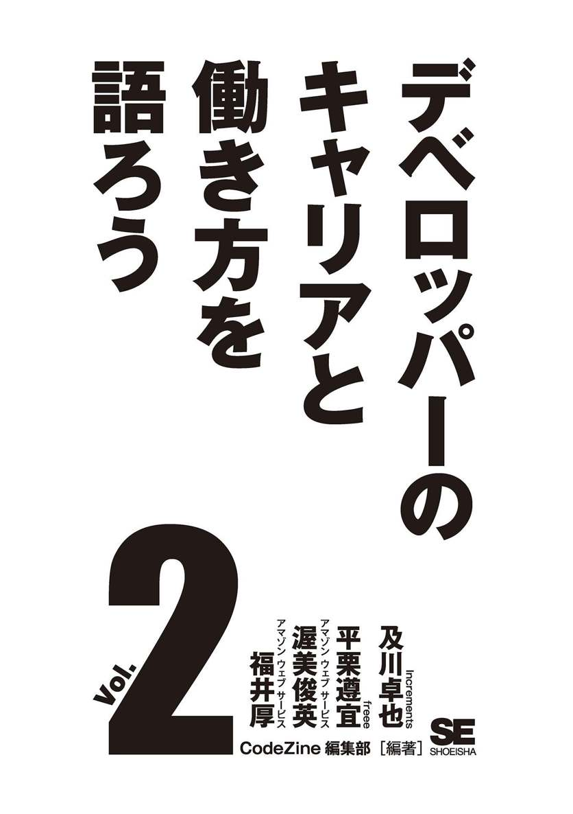
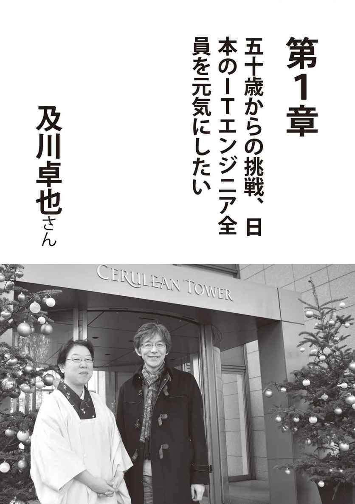
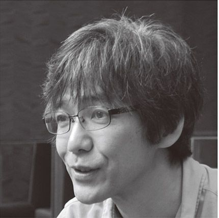
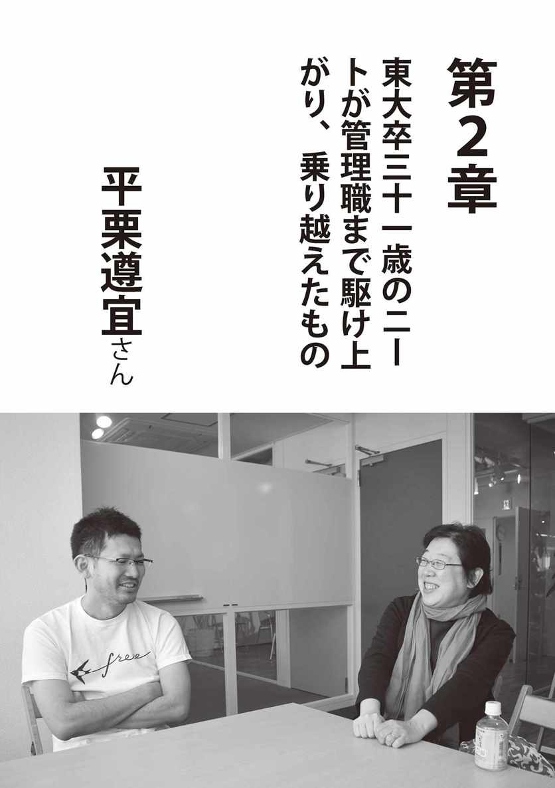
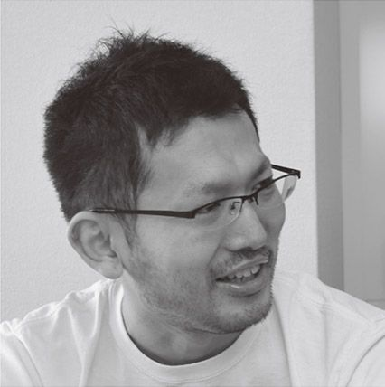
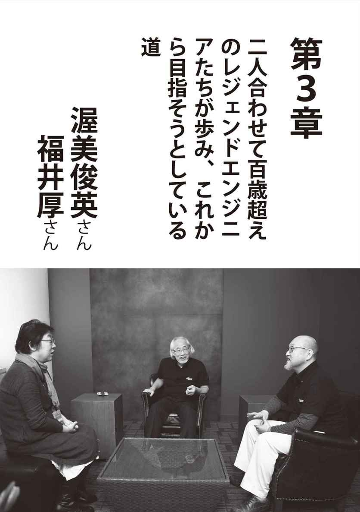
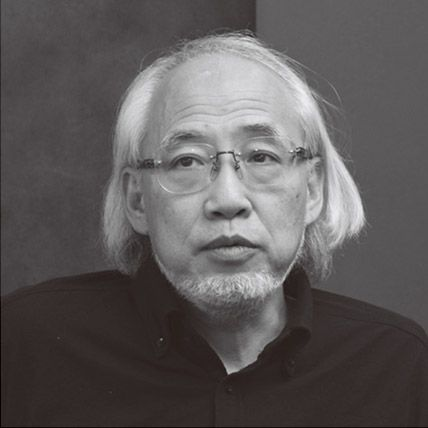
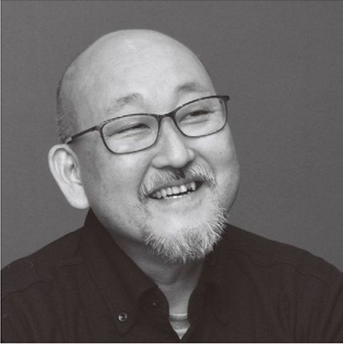

| デベロッパーのキャリアと働き方を語ろう vol.2 (Shoeisha Digital First) | |
| CodeZine編集部 | |
| (2017) | |

本書内容に関するお問い合わせについて
このたびは翔泳社の書籍をお買い上げいただき、誠にありがとうございます。弊社では、読者の皆様からのお問い合わせに適切に対応させていただくため、以下のガイドラインへのご協力をお願い致しております。下記項目をお読みいただき、手順に従ってお問い合わせください。
● ご質問される前に
弊社Ｗｅｂサイトの「正誤表」をご参照ください。
これまでに判明した正誤や追加情報を掲載しています。
正誤表 http://www.shoeisha.co.jp/book/errata/
●ご質問方法
弊社Ｗｅｂサイトの「刊行物Ｑ＆Ａ」をご利用ください。
刊行物Ｑ＆Ａ http://www.shoeisha.co.jp/book/qa/
インターネットをご利用でない場合は、ＦＡＸまたは郵便にて、下記"翔泳社 愛読者サービスセンター"までお問い合わせください。電話でのご質問は、お受けしておりません。
●回答について
回答は、ご質問いただいた手段によってご返事申し上げます。ご質問の内容によっては、回答に数日ないしはそれ以上の期間を要する場合があります。
●ご質問に際してのご注意
本書の対象を越えるもの、記述個所を特定されないもの、また読者固有の環境に起因するご質問等にはお答えできませんので、予めご了承ください。
●郵便物送付先およびＦＡＸ番号
送付先住所 〒１６０‐０００６ 東京都新宿区舟町５
ＦＡＸ番号 ０３‐５３６２‐３８１８
宛先（株）翔泳社 愛読者サービスセンター
※本書に記載されたＵＲＬ等は予告なく変更される場合があります。
※本書に記載されている会社名、製品名はそれぞれ各社の商標および登録商標です。
※本書ではTM、®、©は割愛させていただいております。
はじめに
本書は、株式会社翔泳社のデジタルファーストプロジェクトの第一弾として、ソフトウェア開発者向けのオンラインメディア「CodeZine（コードジン）」と、ソフトウェア開発者向けのカンファレンス「Developers Summit（デブサミ）」とを連動し企画した書籍です。
紙の書籍の電子化ではなく、最初から電子書籍やオンデマンド出版物として企画することで、旧来の出版方式における企画の制約やワークフローにとらわれない、時代のニーズに合った新しいコンテンツ提供の形を模索している段階です。
ＩＣＴ技術が高度化、多様化し、ビジネスの変化が速くなっていく中で、ソフトウェア開発者に対する期待が高まるとともに、学ぶべきことも加速度的に増加しています。また、グローバル化に伴い、海外の優秀な若手エンジニアが国内で採用されるケースも増えてきました。この流れは今後も加速していくことでしょう。
このような世間の荒波に揉まれても沈まず走り続けるためには、俯瞰した視点で一度、ソフトウェア開発者としてのキャリアや働き方を見つめ直し、自分に適した道しるべを見つけておく必要があると考えます。
そこで、「デブサミの母」こと、弊社取締役の岩切に協力を仰ぎ、キャリアプランの参考となりそうな著名エンジニアにロングインタビューを実施しました。より多くの人の参考となるべく、選抜には職種、業種、年代といったバリエーションを意識しています。
文脈を極力そぎ落とさずに、臨場感を残したフラットな内容は、読み手によって受け取り方が千差万別かもしれません。ぜひ自分で考え、自身にあった答えを見つけてください。
本書が、これからのエンジニア人生を豊かにする一助になれば幸いです。
快く取材を引き受けてくださったエンジニアの皆さま、制作面で多大に尽力いただいた弊社の岩切晃子氏、寺田ゆり氏、金井千夏氏に厚く感謝の意を表します。
CodeZine 編集長 斉木 崇


及川卓也（おいかわ たくや）
早稲田大学理工学部卒業後、当時世界第二位のコンピューターメーカーであったＤＥＣ（Digital Equipment Corporation）の日本法人にてソフトウェア開発や研究開発に従事。米国マイクロソフトにて Windows の開発に参加したことから、一九九七年からマイクロソフト日本法人にて Windows の開発を担当。Windows 史上最大の失敗作と言われる Windows Vista の日本語版と韓国語版の開発統括を務めた後、二〇〇六年にグーグルに転職。プロダクトマネージャーとしてウェブ検索などを担当した後、エンジニアリングに異動し、Chrome や Chrome OS、日本語入力の開発マネージメントを担当。二〇一五年一一月より Increments（インクリメンツ）にてプロダクトマネージャとして従事。趣味は酩酊。翌日の反省はライフワーク。ワインはジンファンデル。焼酎は天使の誘惑。ビールはレッドフック。ウィスキーはタリスカー。
紆余曲折を経て踏み込んだＩＴ業界
岩切 本当に驚きました。及川さんがグーグルを辞めるんじゃないかってのは何となく分かってた気がするんですけど、まさかスタートアップで、しかも日本の会社ですよね注１。
及川 そうですね。
岩切 まず日本の会社に就職しようっていうのが、初めてですよね。
及川 そうですよ。
岩切 ずっと外資で生きていくのかと思ってたんで、まず日本の会社に就職したってことがびっくりだし。あと今まではＩＴのインフラを提供する会社、仕組みを提供している会社だけど、今のお仕事っていうのはその仕組みの上でサービスを提供している会社......。
及川 それ一緒ですよ。ただ、言っている意味はすごく分かります。でも僕は仕組みを提供している会社を選ぶんですよ。だからそこは、ちょっと違うふうに見えるかもしれないけれど、僕の中では今のインクリメンツっていうのは仕組みを提供している会社です。例えば、岩切さんの中でツイッターとかフェイスブックってのはどういう位置付けですか。
岩切 社会インフラです、私の中で。
及川 うん、じゃあ同じです。
岩切 なるほど。
及川 僕の会社もそうなります。
岩切 とは言え、なんで日本の会社にね、今。そこが今回私が一番聞きたかったことでもあるんですけど、あえて五十──。
及川 五十歳ですよ。四捨五入すると百。知ってますか。人はね、みんなゼロか百かにしか分けられないんですよ（笑）。
岩切 そこをまず聞きたかったんですけど、そのためには及川さんの人となりもちょっとお聞きしたいと思うんで。まず大学で土木科だったんですよね。
及川 土木じゃないですよ、僕、資源工学っていう。
岩切 資源工学？
及川 うん。わかんないでしょう？
岩切 資源工学ってあれですか。鉄鉱石を探すとか。
及川 そうです。最初は探すんですよね。で、そのあとにそれを採掘するわけじゃないですか。開発っていうんですけど。で、採ったあとに鉄鉱石でも何でもそのまま使えないんで加工しますよね。だから例えば石だったら採掘、砕くわけですよ。で、粉体工学ってのがあって、それを小さい粉にしてとかっていうのがあって。それを実際使っていくところでいうと材料工学みたいなところと。全部に関係するのに安全工学っていうのがあって。そういった鉱物資源を中心としたものに対しての上流から下流までを全部学ぶっていう、そういった学問なんです。
岩切 へえ。なぜそれを選んだんですか。
及川 そこしか入れなかったから（笑）。いや、本当にそうなんですよ。僕、付属校っていうか系属校なんですけれど、早稲田実業っていう学校から早稲田大学に入るんですね。今、早稲田実業って九割九分、ほぼ全員入れるんですけど、僕の時は七割ぐらいしか入れなかったんですよ。で、成績の上の人から順に好きな学部と学科を選べるんですね。
で、僕はギリギリその早稲田の理工学部注２と当時言われてたところに行きたいなと思ってたんですけれど、理工学部の中で行けるのが応用物理と資源工学しかなかったと。
もう一つ保険として希望を出していたのが教育学部の数学科だったんですよ。で、担任の先生から電話かかってきて、「及川、こうなんだけど」って言うから、「じゃあ僕、教育学部の数学科でいいです」って言って。
早稲田の理工って大久保のほうにあって、なんかさびれたキャンパスなんですよ。今は早稲田実業って移転しちゃったんですけど、当時は本当に早稲田のメインキャンパスのすぐ近くだったんですね。文学部とかいろんなのがあって、こう華やかなキャンパスライフが待っているわけですよ。もうそっちに決まってるじゃんって選んだんだけど、それを職場の父に伝えたら「ちょっと待て」と。
彼は土木科を出ていたんですね。父の職場って周りに資源工学科を出た人もいたらしいんですよ。「ここではこういうことをやるみたいだから、君にはこっちが合ってる。先生に電話して、撤回してこっちに入れてもらうようにしなさい」って言われて。ええっと思ったけど、その当時、僕にとって父親は絶対的な権力者だったんで、「分かりました」って、そこに入りました。
岩切 へえ。言うことをきくんだ、父の教えを。面白かったですか。
及川 面白かったですよ。さっき言ったみたいに全部やるんですよ。例えば一、二年の時の基礎教養みたいなところで、物理も化学も機械もやるし。実験って結構レポートが大変なんですけれど、物理実験も化学実験も機械実験を一通りやれてすごく楽しくて。測量みたいなのもやって。あとほかの人がほとんど学んだことのない火薬学だとか爆破工学とかがあるんですよ（笑）。
及川 どこにどうダイナマイトを仕掛けたらどう破裂してというのを、ちゃんとやるんですよ。さっき言ったみたいに粉体工学っていうのも、ものなんか普通に砕きゃいいじゃんとか思うじゃないですか。砕いた時に粒子がどういう動きをするかを全部きちっと数式で計算できるんですよ。
岩切 へえ、そうなんですか。ここに当てたらこうなるみたいな。
及川 で、こういう質量のものはこういう動きをするから、この円すいの中でやっていくかみたいなものが全部計算できるんですよね。
岩切 へえ、かっこいい。
及川 むちゃくちゃ面白いですよね。
岩切 そうすると、安全学とかもやっぱりリスクとか、そういったことを。
及川 そうですねえ。安全工学は何をやったか正直よく覚えてないですね。でも当時少し出てたのが酸性雨の被害みたいなものだったりするので、そういった環境アセスメントみたいなことをやる人もいたし。
だから結構三年、四年になるといろんなところに現場実習で企業にアポをとって行かせてもらうんですね。そうすると石灰鉱山みたいなところへ行って、あっちこっちでダイナマイトがバーンッと破裂して穴を掘っているのが見えたり。女の子数人だけしか同じ学科にいなかったんですが、彼女たちは「いや、ちょっとここ女人禁制だから」って入れてもらえなかったりとか。だからあんまり人にはない経験ができました、たくさん。
岩切 へえ、面白そう。で、それでＤＥＣ注３に入るんですよね。
及川 二つ話があって、一つはさっき言ったその絶対権力者だった父親が僕が大学三年の時に一年間の闘病の後に亡くなったんですよ。それまではバブル世代だったから大学は遊ぶとこだったんですけれど、父は病気と闘いながらも、仕事好きだったし、ちょっと新しいポジションに就いてたんで責任を感じて一生懸命会社に通ってたんですよ。
で、そういうのを見て、「俺、このままでいいのかなあ」と思って、大学も後半だし何かしっかり勉強してみようって。その時にコンピューターサイエンスを学んだんですね。大学の授業とかにもプログラミングとかあったんですけれど、しっかり学んでいくのには体系立っているのがいいし。あと僕、ペーパーテストってすごく好きで得意なんですね。だからじゃあ情報処理試験を取ろうと思って、それで勉強し出したんですよ。
今って情報処理の体系が変わったので試験も変わっちゃったんですけど、昔は二種、一種、特種、そして後からできたオンラインという区分があったんです。二種、一種まで大学で取って、会社に入ってすぐに特種も取って。その次の年に最初のオンラインっていうやつで、それも合格してって感じで。それが一つと。
もう一つは大学四年で研究室へ入るんですけれど、さっき言った資源工学っていろんなものがある中で、僕はもともと地下に対するロマンを感じた人なんですね。だから理系に行く前ってのは歴史で考古学をやりたいと思ってたんですよ。
ちょうど当時の早稲田大学は、文学部の史学科にエジプト調査隊で有名な吉村作治先生がいらっしゃったりして、そういう考古学での調査の時に必要なのと同じような技術をやるんですね。探査工学っていう、地下資源を探査するっていうやつがあって、その研究室に入ってやっていたのがコンピューターのシミュレーションなんですね。
要は、僕がやったのは地中に電極を刺して、そこの抵抗差を調べることによって地熱とかが探査できるやつなんですよ。こういう数値が出た時には下がどうなっているのかとか、逆に下がこういう構造の時にはこういう抵抗差が出るっていうようなものを数値計算でガンガンやって。ＣＧは使えなかったんですけども、プロッターっていうやつでいろんなグラフを作って。
さっき言った情報処理で学んだプログラミングだとか授業で学んだやつをそこでちょっと実践して、すごくプログラムを書いてて、一年間ずっとプログラムを書いてたような感じだったんですね。
で、これは面白いと。こういった数値計算とかをやりたいなと思って、就職の時にＩＴに行くっていうの全然決めてなかったんですけど、何個か受けた中の一つにそのＩＴ系の企業があって、ＤＥＣに入ったと。
岩切 ＩＢＭじゃなくてＤＥＣってところがね、またこう及川さんのその後の人生を決めてくっていうか。
及川 確かに。なんでＩＢＭへ行かなかったんだろう。ＩＢＭなんか考えもしなかったですねえ（笑）。
岩切 ああ、そうですか（笑）。
及川 ええ。だからコンピューター系の企業以外も結構行ったんですけど、コンピューターの企業で行ったのはＨＰ、当時のＹＨＰです。横河ヒューレット・パッカード。それとＤＥＣ、あとＮＥＣですね。で、ＮＥＣは府中工場って今僕が住んでるとこの結構近くなんですけど、工場なんですよ。で、みんな作業着着て、バブル世代だったからぜひ入社してくださいって感じで歓待してもらったんです。そこそこ悪くない大学だったんで。だけど十二時にその社員の方々が社食にみんなグワーッて走ってったんですよ、ベルが鳴ると同時に。あぁ、ここはもうないなって思って（笑）。
岩切 （笑）。
及川 そんな簡単なことで辞めちゃって。で、僕はＹＨＰを気に入ってたんで、本当はＹＨＰに行こうと思ったんですよ。僕の時って大学院の二つ上の先輩と僕しか就職しなかったんですね。あとはみんな大学院へ行くかたちで。で、その上の先輩がＤＥＣを受けて落ちて、ＹＨＰに行くこと先に決めちゃったんですよ。それで、「及川君。研究室から二人ともＹＨＰだとまずいと思うから、君、ＤＥＣにでもすれば」とかって言われて、「あっ、そうすか」っていう感じで。
岩切 なんかあれですね。いつも及川さん、自分で選んでないですね、そこ（笑）。コンピューターを勉強するってところだけ自分で選んで。
及川 結構流されるのが──。
岩切 そう、そう。ピボット自体は人が決めてたって感じだし。今までのところは、第二回目の分岐までは。
及川 そうですね、確かに。大学のやつは本当に運命ですよ。僕、初めに野村総研を受けたんですよ。あそこって当時はシンクタンクだったんですね。鎌倉にあるところで、で、叔父さんの知り合いがその取締役か重役の方にいるっていうんで、もう完全にコネを使いまくると決めて。
岩切 （笑）。
及川 もうそっちで決まったと思って、「大丈夫だよ」って言われてたのにやっぱりだめになっちゃったんですね。やっぱりシンクタンクの研究員って基本、大学院を出ていないと、きつかったんですよ。あと僕は専攻が資源工学って偏った分野だったんでそれでだめになっちゃって。
もうどこでもいいやと思って、基本選ばなければどっかには入れた時代だったんで。で、受けたのがＤＥＣ。あとアラビア石油っていう専攻に近いところ。あとはＴＢＳの技術職員を。
で、ＴＢＳの技術職員はプロセスがちょっと遅かったから別に何も決まってなかったんですけど、アラビア石油に関して言うとなんか彼らの本拠に行って、ＩＢＭのマシンを使ってＣＧ作成をしてくれと。さっきやったみたいに下の油層構造を見るっていうのをやってたんですね。海外へ行きたかったしいいかなと思ってて。ＤＥＣもほぼ決まって、両方もう同時に進めてたんです。
ＤＥＣが内定って連絡が来た次の日にアラビア石油から内定を出しますと。で、最後の一応取締役面接かな、っていうのに来てくださいって言われて、「いや、もうＤＥＣ決まっちゃったんで」ってお断りしました。だからちょっと日がずれてたら僕、アラビア石油に入ってたんですよ。
岩切 （笑）。
及川 で、アラビア石油っていう会社は大変なことになってしまった会社で、アラビア太郎って言われている、すごく有名な創業者の人が戦後すぐに向こうの国王とかと交渉して、採掘権を貸してもらうってことになったんですが、その契約更新が二〇〇〇年にできなかったんです。今もう石油開発事業からは撤退してしまっていますが、本当に大変な時期があったんですよね。それ見て、ああ、行かなくてよかったと（笑）。
及川 特に一九九〇年後半とかみんな厳しくて、僕の同期とかって政府の外郭団体だとかだとか結構エネルギー系行った連中がもうリストラばっかりされちゃってて。
岩切 でも、ＨＰとＤＥＣだったら同じ会社になったんですよね。
及川 今は結局ぐるっと回って。
岩切 じゃあ一番いいくじを先生が引いてくださった感じですね、今から考えると。
及川 そうですね。先生っていうか、先生はその時に留学して研究室にいなくて。先輩がもう。
岩切 ああ、決めちゃった。
及川 うん。「君、ＤＥＣでいいんじゃない？」って（笑）。
営業部隊から始まったキャリアが、やがてソフトウェア開発への道を切り開く
及川 でもその時にＨＰで、ＤＥＣは考えてなかったけれども、ほぼ何か似たような存在だったんです。ＨＰって科学系と計測器が強くてってところがあったんだけど、ＤＥＣはもっとコンピューター、コンピューターしている感じ。
岩切 ですね。あと半導体がね、やっぱり圧倒的にへんてこなやつがあったりとか。
及川 そうですねえ。当時ミニコンって新しい分野を作って、ＩＢＭを抜かすぞって言われてた、すごく勢いのあるベンダー。
岩切 ですよね。
及川 確かにＩＢＭとか考えもしなかったですよ。
岩切 普通はＩＢＭでしょうって、コンピューターやりたい人だったら。
及川 なんかでもね、ＩＢＭってもう当時からメインフレームって感じが強くて、楽しそうな感じがなかった、当時からって言っちゃった、失礼なことになるな。今楽しそうですよね。
岩切 うん。いや、でもほら、榊原さん注４も辞めることになったから、だからちょっとね、そういう感じなのかなって感じですけど。じゃあなんで、ＤＥＣへ行って、ソフトフェアでやっていこうと思ったんですか。
及川 そうですね。最初からもうソフトウェア開発部、ソフトウェア本部っていったかな、そこに入って。面白いんですよ、八十人ぐらい、いわゆるＳＥって言っていましたね、プログラムを書くけど。
研修を受けて、クラスを三つぐらいに分けられるんですけど、僕はその時、もう特種を持ってたんで、一番先に終了するクラスで研修が終わりました。優秀な連中もたくさんいて、やっぱりハッカータイプの人が多かったんですね。ＤＥＣを選ぶぐらいなんで。
そいつらに囲まれて面白かったんですけど、配属決まった時にその八十人いるうちのほぼすべてがやっぱりコンピューターのプログラムを書く部隊に割り当てられた中で、僕ともう一人だけがプリセールス部隊に配属されたんですよ。プリセールスだからプログラムを書くんじゃなくて、お客さんにセールスと一緒に同行して、製品説明して売って来いと。
岩切 へえ、及川さん、そんなことやったんですか。
及川 僕、やりたくなくて。当時、今また復活しているＡＩ花盛りなんですね。ＤＥＣって会社はＡＩがすごく強くて、世界でも初めてかもしれないけど、日本では少なくとも初めてのナレッジエンジニアっていうポジションを作って。要は職人、匠の技をお聞きして、それを全部ナレッジエンジンのほうに移し替えるというような作業をやってて、僕はそういうのやりたかったんですね。
当然その配属を希望する部署っていうとこにＡＩ技術センターって書くわけですけど全く無視されて（笑）。セントラルアドバイザリーとかっていう部隊で、当時で言うオフィスオートメーション製品を客に売りまくれっていうところで、勘弁してほしいなあって思ったんですけど。
岩切 （笑）。なんか真逆な感じ。
及川 やってみたらね、楽しいんですよ。
岩切 ああ、そうなんだ。
及川 僕、話がうまかったんです。
岩切 うん、分かる。
及川 今でもそうなんですけど、デモしたり話したりでお客さんの目つきが変わったりとか、実際に営業もすごく喜んでくれて「及川君、売れたよ」とかって言ってくれて。これ、面白いなと。
岩切 えっ、スーツを着て売ってた？
及川 もちろん。僕、最初の数年ずっとスーツですよ。でもここはＤＥＣのすごいところで、あと時代が僕に味方したなと思うところは、ＤＥＣはミニコンにいわゆるダム端注５、専用のＶＴっていうターミナルをつないでやるのがスタイルだったんですけど、お客さんはもうＶＴなんて使わなくなっていたんですよ。
要は徐々にオフィスに入り始めてたパソコンを使うんですよね。ＮＥＣのＰＣ９８シリーズが圧倒的だったんですよ。あと、ＤＥＣが持っているワープロや表計算ソフトもあったんですけど、やっぱり一太郎が使いたいですとか、Lotus 1-2-3 使いたいですってことがあって。
じゃあ、これを連携しなきゃいけないねっていうことで、デモパッケージを作ったり、デモパッケージのままでいいから使いたいっていうお客さんがでてきたりするうちに、だんだんプリセールスだけじゃなくて、開発もやるようになったんです。
ターミナルエミュレーターはベンダーに作ってもらって、そこを合わせる統合ソフトを自分たちで作って、ちゃんとしたパッケージじゃないと日本で売れないから、製品化しろっていうふうに営業から言われるようになって、じゃあそれを開発しますって。で、プリセールスはやらなくなって、開発に行ったという。
岩切 へえ。
及川 そうこうしているとパソコンが無視できなくなったんで、僕の部署でパソコンをちゃんと見ようってことになって。さっきの製品を中心として、Ｍａｃも当時から触ってたし、Windows もまだ３が出る前の２・１１とか OS/2 だとかっていうのも一通り触って検証してました。Windows が出てきたら、Windows のＧＵＩを使ったクライアントサーバーモデルの製品を作ろうってことをやったり。
で、いろんな経緯があってソフトウェア本部から研究開発部門に移ったんです。そこでは、ＤＥＣの中の日本語を扱う処理体系がめちゃくちゃだったんで、ライブラリー、入力システムとか。あと、ＪＩＳキーボードがなかったんで、ＤＥＣの最初のＪＩＳキーボードって僕が作ったんですよ。官公庁に入らなかったんです、ＪＩＳキーボードがないから。納入の要件に合わないからっていうんで、じゃあ作りますって。
一通り仕事が終わったなと思っていたときに、先輩や上司がどんどんＤＥＣからマイクロソフトに移っていったんですよ。米国でもＤＥＣからマイクロソフトっていうのは、例の有名なデイブ・カトラー注６をはじめ多かったし、日本でも営業マーケットやＳＥ系が多かったんですけど、どんどん移っていったんですね。
マイクロソフトへの出向、がむしゃらにやって力を溜めた日々
及川 「及川、お前も来いよ」って誘われて、面白いからとＤＥＣを辞めようと思ったんですよ。上司に相談したら、「うーん、ちょっと考える」って言われて一週間後ぐらいに──。
ＤＥＣは会社が傾いてた中で、アルファっていう高速64ビットプロセッサーを作ってたんですね。このアルファは Windows NT っていう今の Windows の元なんですけど、その上でも動くようにしようとしていて、これをＤＥＣはマイクロソフトと一緒に作ってると。で、「日本語版のためにチームを作って米国に送らなきゃいけないんだけど、お前、リーダーやれ」って言われて。
岩切 むちゃぶり人生（笑）。
及川 マイクロソフトに行ったら、僕、ＳＥやれって言われてたんですよ。確かに楽しそうだなと思って、それでもいいかなと思ってたんですけど、どっちにしようかなと。Windows NT は当時みんなが憧れる次世代ＯＳって言われていて、ＵＮＩＸを覆すって言われていて、実際覆したわけですけども、そういったＯＳの開発に携われる人間なんて日本で五十人もいないわけだし、世界で見ても何百人しかいないわけです。その一人になれるっていったらそっちを選ぶでしょうっていう感じで。マイクロソフトに転職するのをやめて、マイクロソフトに行くけど開発で派遣されて行きます、みたいな感じで。
それで一年間、米国のレドモンドに行って。
岩切 あっ、そうなんですか。ご結婚はまだされてなかったんですか、その時は。
及川 していないですね。結婚する一年前ですね。
向こう行って、本当に楽しかったですねえ。なんかほとんど寝ないで仕事しているような状態で。ＤＥＣから向こうにいった日本人は四、五人だったんですけど、みんなワークスタイルはばらばらなんですよ。朝八時に来て夕方五、六時には帰るってやつもいれば、午後二時ぐらいに来て明け方までいる連中もいて。
僕、別に付き合わなくてもよかったんですけど、仕事は山ほどあったんで、大体みんなと同じように働いていたら、朝九時ぐらいから夜三時とか明け方までとか働いていることになっちゃって。毎月がボーナスみたいな給料でした。それだけ働いても全然苦にならなかった。やっぱり世の中を変えるもの作ってるんだっていうのもあるし。マイクロソフトの人もそうだし、めちゃくちゃ優秀だし、やっぱり目の色が違うんですよね。生意気なんですけど、俺たち、世界を今から変えてやるっていう感じでギラギラした。Windows NT を開発していたマイクロソフトのレドモンドのビルがあるんですけど、ほとんど不夜城なんですよね、夜になるとケータリングでちゃんと飯が届いてるし。という一年を過ごして。
岩切 及川さんって英語ってできたんですか。
及川 できなかったです。そこそこ自信はあったんですよ。なんでかっていうと、さっき言った最初のプリセールスの部隊だったんですけれど、われわれが扱っている製品の技術的ノウハウがあんまりなかったんで、オーストラリアからプリンシパルエンジニアっていう結構位の高いエンジニアに二人、東京のオフィスに来てもらって、「及川。お前、その人たちからいろいろ習え」って言われて、勝手に組まされていたんで。どうにか英語の一つはギリギリできるぐらいになったんですね。あとは高校とか中学校が英語教育に力を入れていたのがあったんで、なんとかなるなと思ってた。
でも行ってみたら全然通じなくて（笑）。一年間大変だったんですけど、帰る頃にはそこそこ普通に会話できるかなみたいな。でもＴＯＥＩＣを日本に帰ってきてから受けたら、まだ七〇〇点台だったから全然そんなに大したことなかったですねえ。だからそのあとです、日本に帰って来てからずっと勉強を続けて。
岩切 そうですか。で、帰って来てからＤＥＣで。
及川 ＤＥＣでそのＮＴのアルファ版のサポートというか、ＤＥＣ自身もそのＮＴ用のソフトウェアって作っていたんで、その技術サポートとかをやっていました。でも僕がマイクロソフトに行っている間にＤＥＣが不景気で大変なことになっていまして。米国の景気もそうだったんだけど、リストラの早期退職プランが何個も何個も出るんです。
最初の時に直属の上司が辞めちゃうし、吉岡さん注７とかも辞めちゃう。どんどん人がいなくなっていく中で、僕は辞められたら困るんで、基本何をやっても許される状態になってたんですよ。本当にモラルハザードを起こしていて。
上司から言われて「これやれ」「やります」「どのぐらいかかる」「二週間あればできると思います」って答えるんですけど、三日ぐらいで終わっちゃうんですね。周りにパソコンからアルファのサーバーから機材が山ほどあるから、空いた時間に、自分の技術的好奇心を満たすためにいろんなことを勝手にやってたんですよ。
当時、本も書きまくってたんですね。雑誌の寄稿もしまくってて、あとは名前が売れてくるとセミナー依頼が来るんですよ。今もうなくなっちゃったかもしれないけど、そういったセミナー屋さんってボッてて、講師もかなりもらえるんですよ、二日ぐらいやったら二〇万ぐらいもらえるんですよね、あれ。だからそういうのをやってたくさんお金を貯めて、マシンを買いまくってってことをやって。
技術の輝きに魅せられてマイクロソフトへ転職
及川 それを二、三年やってたんですけど、その時にユーザーグループも立ち上げたんですね。ＪＷＮＴＵＧ注８って言う。日本のユーザーグループの先駆けの一派で面白かったんです。外から Windows に対してああやこうやって言ってたんですけど、言っちゃ悪いけど僕、入りたいっていったら入れるわけですよ。外から Windows をよくするためにこういう提言しますといって。昔のマイクロソフトのメールシステムとか腐ってたんで、いろんなＲＦＣ注９に準拠していないことをやってたから全部検証して、これを直せっていうの出してあげたりだとかやってたんですけど、これだったら中に入って直したほうがいいぞってなって。で、最初に誘ってくれた先輩のとこに行って、生意気にも「そろそろ僕、入ってあげようかと思うんですけど」みたい言い方して（笑）。
岩切 でもさ、あの頃の及川さんって、ほんと神だったからね。
及川 いやいや。
岩切 今も別な意味で神だけど、あの時は本当にＩＴ業界の新星現るじゃないけど、日本で開発して帰って来て、それで普及もしているから、もう誰も勝てない感じ。
及川 でも実際はちょっとね、僕、卑怯だったんですよね。マイクロソフトの中の人ってあんまり情報発信できないし、立場上ね。それと正直言うと技術レベル、そんなに高くなかったところがあったんですよ、当時は。高い人は高いんですが。
岩切 でも、しゃべれないんだよね。
及川 開発している人なんて外で話さないですよ。しゃべっているのはＳＥの人かマーケの人だったんじゃないかと思うんだけど、すごく表面のところしかしゃべってないんですよ。だから、日本で開催された TechED注10は最初は内容が本当にひどかったんですよ。で、僕はソースコードを読んでるわけですから全部分かるわけです。ベータ版が出る前から持っていたり、さっき言ったみたいに社内に環境があって好き放題やってたわけだから、これで詳しくならないわけがない。
でもね。さっきは入ってあげましょうかみたいに生意気なこと言いましたけど、面接は結構厳しくて。
岩切 いつごろですか。
及川 一九九七年。
転職を決めた理由が、さっきひどいといっていた TechEd だったんですけど、一九九七年の TechEd はめちゃくちゃよかったんですよ。 Windows 2000、当時まだＮＴ５ってコードネームだったんですけれど、それの概要がいろいろ紹介されて。
ほとんど米国から来たプログラムマネージャーだとかがしゃべっているんですけど、僕ともう一人、野田さんっていう先輩と見に行って。ＤＥＣの時、ずっと仲良くやっていて、インターネット系ですごく優秀な方です。そこで、Active Directory注11とかが出てきて、分散コンピューティングでＤＥＣで僕らが夢見ていたものが実現できてるわけですよ。話には聞いてたけれど、もう鳥肌が立っちゃって。
確か、パシフィコ横浜で開催されていたから、終わった後に横浜で酒を飲みながら、「及川。お前、どう思う」「いや、すごいっすね」って。彼もマイクロソフトから誘われてたんですよ。ずっとインターネット系の事業部を立ち上げたいから来いって言われてて。「どうする」「いや、俺、もう辞めて行こうかと思うんですけど」「じゃあ辞めよう」と。
岩切 （笑）。
及川 で、同時に辞表を出して、彼がちょっと早く入社した。
一九九〇年半ばから後半のマイクロソフトの技術の輝きは半端じゃなかった。今もそうなんですけど、やっぱりインターネットに方向転換した時のＰＤＣ（プロフェッショナルデベロッパーズカンファレンス）が、サンフランシスコのモスコーニセンターであったんですけど、あの時のそのＰＤＣもすごかったですね。やっぱりビル・ゲイツの一言で社内が方向転換した時のあの人たちのパワーはすごいですよ。
岩切 ＩＥ（インターネットエクスプローラー）もリプレースするって決めてから確か五、六十日でガッと変わった記憶があるので。
及川 やっぱりすごい。乱暴なこともたくさんしたんですけども、それも含めて勢いがあって、技術も本当に素晴らしくて。それで、一九九七年に入ったっていう感じです。
岩切 調布に通われた。
及川 調布ですよ。ちょうど調布に移って一、二年ぐらいの時で、それからずっと調布にいて。Windows 系で最初にやってたのはターミナルサーバーってやつだったんですが、今もう Windows Server とかに入ってるし、ワークステーションのほうでもＲＤＰ（リモートデスクトッププロトコル）っていうのでリモートデクストップができるじゃないですか。あれの一番初めのやつをやって。
シトリックスからソースコードライセンスを受けて、それをベースに作っていたんですけれど、いろいろと考えなきゃいけないことがあって、それを全部検証してって。
たぶんエンジニア人生でキーボードに祟られているかもしれないんですけど（笑）、キーボードのハンドリングがあれ難しいんです。
ターミナルサーバーがありますと。で、サーバーのほうについてるキーボードって、当時はＡＸキーボードとか、ＯＡＤＧキーボードっていわれている今みたいなのもあれば、英語キーボードと、いくつかありましたと。それで、クライアントのほうには違うキーボードがあるじゃないですか。キーボードのマッチングしなきゃいけないんですよ。クライアントに合わせた形でサーバー上でのターミナルサービスのセッションにはそのキーボードドライバをロードしないといけない。それに、例えば、自分が英語キーボードでつないでいて、いったんサスペンドした状態でこっちからＡＸキーボードをつないだときには、どのキーボードを使えるようにすればよいか、といったトリッキーなシチュエーションについても考えないといけない。
あともう一つ面倒くさいのが、Windows ってキーボードとＩＭＥが完全にくっついてんですよ。そうすると、ローカルではＡＴＯＫを使っています。でもサーバーのほうにはＭＳ‐ＩＭＥしかありませんとかっていう時にどうすればいいかだとか、逆もしかりだし。マッチングパターンがいくつもあるんで、ちゃんとそこのハンドシェイクとかを設計しなきゃいけないんですよね。それをやったりとか。
あとはフォントの扱いをどうしようかっていうところで、フォントをキャッシュする、ビットマップに持ってくる、とかも日本語と英語で全然違うんですよね。そういうふうにいろいろと検証したりとか。いやあ、楽しかったです。
岩切 へえ。及川さん、働いてたんですねえ。
及川 今でも働いてますよ。僕、結構 Windows の王道もやらせてもらったんだけれど、ちょっと変わった製品もやらせてもらってて。その次に Windows 2000 の Active Directory の日本語の扱いだとか、ガチの部分を決めてったところもあるんですけど、それに前後して、ＳＦＵ（Services for UNIX）っていう製品があったんですね。昔 Services for 何とかっていうシリーズがたくさんあって、Services for NetWare っていうのは、NetWare注12をつなぐための製品だし、NetWare って今の人は分かるんですかねえ。分かります、岩切さん？
岩切 分かりますよ。NetWare の広告取りに行ったこともあります。今もたまに。
及川 ノベルは、今は Linux の会社になっちゃっていますね。そういうのがあって、Services for UNIX っていうのはＵＮＩＸとつなぐための製品なんですね。だから社内でも完璧に Windows 一色だしマイクロソフト一色なのに、僕んとこだけなんかサンマイクロシステムズやＨＰのワークステーションがあったり、古巣のＤＥＣに連絡してアルファを持って来てもらったりとかで。ＮＦＳ注13って別のファイル共有プロトコルでがっちり組んで、Windows とどうつなげばいいかっていうのやっていたり。
岩切 その時ってシアトルというか、本国とどういうコワーキングしてたんですか。
及川 結局ね、本国のほうの部署の一部っていう感じなんですね。リモートオフィスなんで、そこってプロジェクトによって難しい時とかもあるんですけど、基本は一緒に作る。特にでもＳＦＵに関して言うと、すごく良好な関係ができてて、僕は本当に開発チームのメンバーの一人という感じでやれてたんですね。
開発はインドでやってたんですよ。ハイデラバードにできてたインディアディベロップメントセンターというところに行って。本当にそのＳＦＵは面白かったです。
オープンソースに対してマイクロソフトは昔厳しかったんですね。オープンソースのソースコードなんか読んじゃいけないって言われてんですけど、僕とそのＳＦＵの連中っていうのは除外されていて、だからＧＮＵのソースコードも読んでるし、あとＧＣＣに対してパッチを出したりとかもしてて。ＳＦＵが持っているＵＮＩＸのサブシステムの上でちゃんとＧＣＣが動くようにしないといけないといったこともやって。それ以外は普通にエンタープライズ、サーバー系ですね。Windows のサーバーとか、あとシステム管理系の製品があったりして。
新しいチャレンジ、本当の開発を求めてグーグルへ
岩切 で、華々しくマイクロソフトでいろいろやってたんだけど、辞めちゃうんですよね。
及川 うん。やっぱり違うことをやりたいなと思って。で、時代はウェブだったんですよ。梅田望夫さんの『ウェブ進化論』を読んだんですね。
岩切 （笑）。
及川 で、あとははてなのことを書いた本があったんですが。
岩切 はい、うちから出てる本です注14。
及川 そう、そう。はてなって今も変わったことをやっているんですけど、当時はもっと変わったことをやっていて、社内の勉強会をポッドキャストで配信したりだとか、やってほしいことをはてなアイデアで募ったり。今もあるのかな注15。そういったのがあって、投票して人気が高いアイデアだと実装してくれるとかがあったり、なんか面白いと。
これはインターネットだなあと思って。それで社内を見たけれど、なんかどよんとしているんですよ、インターネット系の（笑）。これ、社内でインターネットをやるっていっても面白くないなと思って、もう辞めちゃおうって決めて。何社か当たったんですけど、その中でグーグルがあって。グーグルって本当に秘密主義っていうか、人員がいなかったから仕方ないと思うんですが、何をやってるかわかんないし、僕みたいな人が入れるかわかんないと。ウェブを見ても何だろうこれって感じだったんですね。
岩切 おいくつでした？ その時。
及川 四十一です。で、ちょっと人を頼って、打診して、じゃあ応募してくださいってことで応募してと。そしたら東京のグーグルに人事部なんてなくて、そんで、いきなりなんか。
岩切 藤井さん注16が初めに入った感じですかね。
及川 いやいや、僕より彼、あとですよ。僕より前なのは石原直樹ですよ。
岩切 あっ、そうか。石原直樹さんか。
及川 そうそう。だからＰＭ（プロジェクトマネージャー）でいうと彼が僕より一、二か月前に入っていて、その前は岩切さんはあんまり知らない人です。「グーグルで最も活躍する日本人」って言われている徳生健太郎注17がマウンテンビューで僕より二年ぐらい前に入ってて、彼の弟の徳生裕人が今東京の製品開発本部長なんですけど。彼も僕よりちょっと前に入ってた。
岩切 へえ。
及川 で、だから僕が三、四人目っていうかたちで。当時のＰＭの東京のヘッドが米国から来てた人で、彼女は四か国語ぐらいしゃべる人だったんです。日本語もペラペラで英語もペラペラで。彼女から電話がいきなりかかってきて、電話でインタビュー受けて、英語と日本語で両方受けてっていうところで、それをパスして、じゃあ次進んでください、マウンテンビューに飛んでくれって言われて。向こうに宿泊費と交通費を全部持ってもらって行って、一日かけて五人とインタビューして、と。
東京に戻ってきたら、ちょうど東京に出張している人がいるから、その人とも会ってくれっていうんでもう一回インタビュー受けて。最後に恐らく形だけの村上憲郎インタビューってのがあって（笑）。
及川 それでグーグルに入りましたと。
最初の二、三年でＰＭとしていろんなことをやって、ウェブ検索をやって、あのホームページのデザインチェンジって僕らがやってたんですよね。だから一時、気の迷いかのようにホワイトのところ、下のところにプロダクトのリンク付けたページ作ったことがあって、あれはいろんなものを考えたし、あと検索結果のところのＵＩも若干変えたんですよ、実は。ツールバーもやったし、あとグーグルニュース。僕、結構力入れてやって、技術というよりも新聞社や通信社の人に理解して許可していただくっていうような。
そうこうしているうちに Chrome が出てきて、誰かＰＭとしてちゃんと見てくれって話になって。もう一つはＩＭＥを作りたいっていう連中がいて、20パー注18なんだけど、チャットがピーッと来て、「卓也さん、ＩＭＥに興味ありませんか」って言うから「はい」って答えたら、「じゃあ、ＰＭお願いします」と、巻き込まれてしまって。
といった感じで、ＰＭをやりつつ、半分はエンジニアリングみたいになってたんですね。ただその Chrome の東京のエンジニアチームを立ち上げるよって話になった時に、誰もマネージャーをやりたい人がいなかったし、なれる人もいなかったんですよ。そしたら、東京のエンジニアのリーダーたちの何人かが、じゃあ誰か探さなきゃっていう時に僕を誘ってきたんですよ。マウンテンビューの Chrome チームのほうのディレクターからも話を聞いたんだけど、エンジニアリングのバックボーンがあって Chrome を今見てくれてるんだから、そのままマネージャーやってくんないかって話があって。で、移ったと。
グーグルってラダーを移る時にちゃんとしたプロセスがあるんですよ。もう一回採用面接みたいなのがあって、面接は僕の時はやらなくて済んだんですけど、一応もう一回オファーレターが、採用通知が出る感じで。
岩切 社内転職みたいな感じですね。
及川 だからもう一回、僕はそこで完全にエンジニアのほうに入り直しています。それ以降は、ＩＭＥもやってたんですけれども、ＩＭＥは Chrome OS に入れて Android 版を出してっていうとこで僕の手を離れたんです。Chrome は最後まで。Chrome OS も二年ぐらい前までやってたんです。っていう感じで、楽しかったです。
岩切 これ書いていいとかはどうかわかんないけど、及川さんと話した時にマイクロソフトで付き合ってた人たちともう付き合わなくていいと思っている、っておっしゃっていましたよね、あの時。
及川 えっ、どういうコンテキストでそれ言いました？ 今でも付き合っているし、付き合わなくていいってことはないんですが。
岩切 今、会っている人たちは自分よりも大体十歳以上年下の人ばっかりで、マイクロソフトを辞める時にもうこの人たちと会わなくなるかもしれない。だから今付き合っている人たちと会わなくなるかもしれないっていう覚悟でこっちに来て、今十歳ぐらい年下たちと一緒にプロダクトを作っていてすごく楽しい、ってことをおっしゃった記憶があって。やっぱりそれだけ何っていうんですかねえ、面白くなかったんだろうなって。
書いていいかはあれだけど、やっぱりマイクロソフト自体がすごく技術の面白い会社で、それがちゃんと世の中にも喜ばれるようにものを提供してた時代と、ちょっと停滞してた時期がやっぱりあったと思うんですよね、残念ですけど。今はナデラさんになってまた面白くなってきてると思うんですけど。その時期に結局及川さんは去っていくんだけど、面白くなかった。技術的チャレンジがなかったんだろうなとか。
及川 ああ、それはね、ありますね。
もし書いていいかたちで書くならば、やっぱり Windows Vista っていう製品は残念だったんですよ。あれはね、実はＯＳとしては素晴らしいんですよ。その後の Windows 7/ 8/ 10 のいい部分っていうのは、あそこでアーキテクチャーがしっかりしたからできているところがたくさんあるんです。
けれども、建物として見るならば土台はしっかりしてたんだけど、上の部分をあとから入居する人が出る直前に内装を変えまくったりだとか、そういう感じだったんです。だから一応ＯＳの形態は取っているんだけど、つぎはぎな感じだったんですね。だから五年半も開発にかかっているんですよ。
で、もうおっしゃる通り、いろいろ課題があって、マイクロソフト本社のシニアＶＰに、僕が大好きだったブライアン・バレンタインっていう人がいたんですけど、彼も直前に辞めちゃったり、っていう感じで開発もごたごたがあって。
もう一つは日本での開発自体があんまりエキサイティングじゃなかったんですよね。やっぱりどの外資系ＩＴ企業でもあるんだけども、子会社で開発なんかさせたくないんですよ。リソースが分散しちゃうことになるし、日本のレイバーコストは高いし。だから開発って言いながら僕の中ではこれ、開発じゃないなと思っていて、もっと本当の開発をしたいなっていうのがあったというところですね。
岩切 だからそこはすごい。あの名声を知っているが故に、外から見たらやっぱりミスターマイクロソフトだったと思うから、そこを辞めてグーグルに行くっていうことはやっぱりご自身からしてもすごい決断だったと思うんですよね。
及川 でも、今回も前回もそうなんですけれど、だからＤＥＣからマイクロソフト、マイクロソフトからグーグル、グーグルからインクリメンツと全部そうなんですけれど、やっぱりなんか楽しいことやりたいからっていうのありますね。すごくエキサイトする何かを見つけたいと。僕の性格が多少飽きっぽいところがあるせいかもしれないんだけども。
マイクロソフトのＣＥＯだったスティーブ・バルマーっていう人がいるじゃないですか、今はなんかマイクロソフトをちょっと停滞させた原因みたいに言われちゃってて、ちょっとかわいそうなんですが。あの人は素晴らしい人で、社員に対してもそうですし、外の人に対してもいろんなかたちでパッションを与える、モチベートするっていうとこで素晴らしい人なんですね。
で、彼が言ってた言葉が、スティーブ・ジョブズがスタンフォードの卒業式典で言ってたこととほぼ一緒なんですけれど、「もし会社に行きたくないって思ったら、それは何かがおかしい。毎日行くたびに今日は何がやれるんだろうっていうふうに俺はエキサイトしている。君らがもしそうじゃないんだったら、会社が悪いか、組織が悪いか、上司が悪いか、プロジェクトが悪い。もしくは自分が悪いってこともあるから、まずは毎日今日は何をやるってことで興奮するような、そういったような職場を目指せ」っていうようなことを言っていました。
岩切 かっこいい（笑）。
及川 だから会社へ行くのは、おもしろかったんですけど、管理仕事が多かったり、さっき言ったみたいに本当にこれ開発かって、自分で悲しくなるような仕事もたくさんあったりする。こういう外から見るのと中でやっているのとでギャップがあるのが一番嫌だったんですよ。
僕、最後は日本語と韓国版の開発責任者になってたんですけど、実際は何を開発しているのと聞かれた時に、あまりやっていませんっていうのがあるわけじゃないですか。「何を作ったの」「いや、ここを作った」って言えないわけですよ。それはなんか悲しいなと思って。
しっかり自分が技術で携わったって言えるようなところをやりたいと思うし、あとは Windows も立派だとは思うんだけれども、だんだんウェブのほうがプラットフォーム化してくるなっていうところで、そっちに移りたいなという思いが強くなったんですね。
岩切 で、グーグルでもいろんな仕事なさってたと思うんですけど、なんで、面白くなくなったんだろうなって。
及川 そうですねえ。今回は会社は全然悪くなくて、まず僕がいたプロジェクトは、めちゃくちゃ面白いですね。今でもすごく可能性があると思います。
やっぱり Chrome でＨＴＭＬ５って言われているところは、Chrome を作っているのと同時にウェブを作っているんですよ。Chrome だけに何かを入れられないわけなので。そうするとウェブの標準を作るというところで、マイクロソフト、モジラ、オペラ、アップルというのは競合であると同時に仲間なんですね。そういった組織の垣根を越えてウェブの将来を語り合えて、夢物語ではなく実装していける、という組織だから、めちゃくちゃ面白いんですよ。
だけど、何だかんだいって七年間ずっと Chrome をやってきていたんですね。そうすると、ちょっと違うチャレンジをしたいなと思い始めたのが去年（二〇一四年）ぐらい。いろいろ考えて少し時間を取ったりもしたんですけれど、少なくともこのプロジェクトからは離れようと決めたんですね。で、上司とチームに僕はちょっと離れますと。仕事はこういうふうに引き継いでいくんでと、終わりを決めたんです。
その間に社内、社外で探しますってことしか決めてなかったので、グーグルを辞めるのは最初から考えてたわけじゃなかったんです。ただ僕は海外のオフィスに行くことは家族の事情でできなかったんで、東京だけで考えていたところ、やっぱりちょっとマッチするジョブがなくて。なので外だなと。何となくそれは初めから覚悟していて、外で探し始めたと。
でもありがたかったですよ。プロジェクトを離れるってことをポロッといったら、社内の人がいろんなかたちで「仕事、こういうのありますよ」とか、「これ、引っ張ってきてもいいですよ」とか言ってくれて、
岩切 うん、それは及川さんの人徳ですよね。でも日本の企業に入るっていうのすごい。でもそうですよね。開発をするとなると、日本で本当にガチで開発させてくれる外資の会社ってあんまないですもんね。
及川 うん、これ、そのままでは多分書けないと思うのでぼやかして言いますが、やろうとしている会社はありますね。エンジニアのディレクターを募集してて、私の周りの人間にも何人か声かかってて、僕んとこにも一応誘いが来たりしてっていうのがあったから。
日本のＩＴエンジニア全員を元気にしたい
及川 僕、もう端的に話しちゃうと三つ選択肢を考えてたんですよ。一つは外資系ですね。もう一つは日本の大企業で、あとはスタートアップ。この三つだったんですよ。
外資系は、いろいろといい言葉をかけていただいたりしたんですが、行かなくても大体想像がつくところが多いんですよ。これ、かっこいい言葉だから絶対書いてほしいんですけど、「過去に見た未来」なんですよ。
岩切 あっ、分かる、分かる。
及川 要は。
岩切 自分が体験したことがある。
及川 そう、そう。本当は一社、僕はちゃんと申し込みはしなかったんだけど、どんどん選考プロセスが進んでいった会社があるんです。考えるのは楽しいんで、この製品を僕がもし担当したらこうやるよってことを、頭の整理のためにバーッと英語でドキュメントを書いて渡してあげたりして。でも、これってマイクロソフトやグーグルでやったのと一緒だぞと思うわけですよ、携わっている製品は違うんだけど。
僕の残りの人生で、これをもう一ラウンドやるのは楽しいかっていうと、もう飽きたと。尊い仕事だし、やりがいもあると思うけれど、僕は同じことを繰り返すのは嫌だというんで、外資系っていうのはいったんなくなりました。
これは、よく書いといて欲しいんですけど、僕、今のインクリメンツで失敗して、また探さなきゃいけなくなったら外資系へ行く可能性があるんで（笑）。なので外資系、悪くはない。
岩切 うん。ただ新しいチャレンジはないってことですね。
及川 そうです。だから全然違うことをやりたかった。
外資じゃないっていうのは、一回、日本企業に行ってみたいなって思いがあったんですよ。それはさっき言った藤井さんの影響もあるんです。藤井さんも、最初は富士通ですが、その後ずっとサンマイクロシステムズにいて、基本外資じゃないですか。彼も言っていたのがやっぱり日本に恩返ししたいなって。
僕は外資で働くことは、ちゃんと日本のためだと思っているんですね。実は外資の人間って恐らく日本企業の人以上に日本のことを考えてんですよ。これ、ブログエントリーにもなっているんで、必要があったらみて欲しいんですけど注19。
岩切 うん。考えざるを得ないんですよね。
及川 だって、もし日本が地盤沈下を起こしちゃったら撤退するかもしんないですよね。Ｒ＆Ｄ（研究開発部門）の撤退なんてたくさんあるわけだから。そうすると、いかに日本をアクティブにし続けるかが僕らの死活を分けるわけですよ。
あと、生産性があって優秀なエンジニアが日本にたくさんいることを証明しないといけない。日本にいる優秀なエンジニアを全員雇えるわけじゃないから、日本のＩＴエンジニア全員のレベルが高くない限りは、やっぱりグーグルの日本法人って優秀であり続けられないじゃないですか。つまり、エンジニアのレベルの底上げが日本法人のためにも必要であり、それはそのまま日本のためであると。
このように、外資にいても日本のことをすごく考えてたんだけど、そうじゃなく本当にずっぽり日本の企業に入ってみたいなと思ったと。
一つは大企業に入って、従来型でなかなか進んでないところを外からボンと来て、乱暴なことを言ってでも、組織のやり方を変えて、グローバル化を進めるみたいなこと。そっちからも何社か声をかけてもらってたんですね。
もう一つは、ちっちゃいスタートアップで、日本で大きくなって海外展開するところの創業メンバーに近いようなところで入れたらいいな、っていうのがあって。この二つで悩みました。
組織変革できると楽しいなと思ったんですけど、考えてみると日本企業ってやっぱりなかなか変わんないじゃないですか。むしろ、外側からこそ変えられることもあったりするなとかって思って、日本で元気のいいスタートアップないかなぁと。
で、ベンチャーキャピタルの人のツテで、スタートアップに会いに行ったりもしたんですけど、やっぱりみんな若くて優秀な人がいて、僕なんかいらないところが多いんですね。成長のステージが上がって、組織が大きくなったらいるかもしんないけど。
例えば、今エンジニアリング組織を作りますっていう時に、バリバリコード書ける優秀なＣＴＯって結構いるわけじゃないですか。それと僕はたぶんタイプが違うと思うんですよね。
岩切 コードで引っ張ってくみたいな感じですよね。
及川 そうですよ。で、自分で起業しようかと思った時、何をやりたいかなって考えたんですよ。
バーティカルなソリューションのＩＴはたくさんある。それがさっき岩切さんが言ってた事業をＩＴで行うってこと、医療×ＩＴだったり、食×ＩＴだったり、教育×ＩＴだったり。面白いんだけど、僕がこのあと数年それを熱意を持ってやるかっていうと、アドバイスはしたいが、自分がそこの真ん中でやりたいと思わなかったんですよ。
岩切 うん。及川さんはそういうタイプじゃないと思います。
及川 なので、僕が今までやってきたキャリアの棚卸しを考えた時に、やっぱり要素技術をしっかり責任を持ってやると時が楽しい。ＯＳも、ウェブテクノロジーもそうだし。
でも要素技術をやれる日本のスタートアップなんてあまり多くないんですよ。いや、あるんだけど、私が入るようなタイプとはちょっと違った。ちょっと離れたとしても、ＩＴエンジニア全員に影響を与えられるようなものは何だろうって時に、考えていたアイデアが、今のインクリメンツの人たちが次にやりたいと思っているところと非常に近かったんですね。
だから今から資金調達して、人集めて、チームを作ってということをやるよりも、「僕もこういうのを作りたかったんです。一緒にやりませんか」っていうかたちで入ったほうがいいだろうと言って、今の会社に入ったって感じです。
岩切 じゃあ、及川さんが次に作りたいものがあって、今の会社とマッチしたってことなんですね。
及川 そうですね。具体的なものっていうのはもしかしたら作んないかもしんないし、作りたいものが後からたくさん出てくるかもしれませんが。
岩切 コンセプトが合ったって感じ。
及川 僕、Chrome をやっていたのと同時にグーグルデベロッパーデイだとか、グーグルの開発者向けイベントで基調講演のスピーカーとかもやっていたじゃないですか。
そうすると特定技術もそうだけれど、一方でエンジニアの人たちを元気にするのが、すごく大好きなんですよ。Qiita っていう製品はエンジニアの人たちにぜひ情報共有してください、それで楽しんでください、成長してくださいっていうことをやれるプラットフォームでしょう？
ここは僕の考えにすごく合っているなあと思って。だから基本はエンジニア頑張れ、僕らインクリメンツと一緒に成長して世界に出ようって感じです。
新鮮な毎日、教えること教わることがたくさん
岩切 今十四人？
及川 十四人、僕が十四人目です注20。
岩切 へえ。及川さん、取締役でも役員でもないんですよね。
及川 違いますよ。それもなんか面白いじゃないですか。
岩切 面白い？
及川 なんかみんなの「ええっ？」っていう感じのサプライズがたくさんあるでしょう？ 僕ね、人を驚かすの好きなんですよ。
岩切 ああ、そうですよねえ（笑）
及川 タイトルとかどうでもいいと思うんですよね。
岩切 そうですね。役割ですからね。
及川 うん。もう何を作れるか、作っていくか、メッセージを発信できるかっていうところ。
エンジニアじゃなくて、今ＰＭですけれど、本当に自分でやんなきゃいけないところがたくさんあるから、久しぶりで新鮮で楽しくて。ＳＱＬを使ったり、スクリプトは前の会社でも書いてましたけど、そういうのたくさん書いて。
本当にそういった技術に触れるのが楽しいし、グーグルでももちろんできるんだけど、大きい会社だからそういったインフラまわりは自社で作ったものがあるわけですよ。スタートアップってそんなの自分で作れないから、既存のもの、有料無料のものを組み合わせて、そういったＣＩ注21みたいなものを作り上げるじゃないですか。頭じゃ知ってはいたけれども、実際その現場に入ると、ああ、こうやって開発されていくんだ、すごいところもあれば、なんか甘いところもあったりすると。「そこはこうやったらいいんじゃない？」って、グーグルだとかマイクロソフトとかの経験で言えたりするから、すごく面白いですねえ。
いや、本当に新鮮な毎日、覚えることとかやることがたくさん。
岩切 へえ。私も去年から社内異業種に来てて、全然言葉が違う、文化が違うところにいるんですけど、疲れませんか。体とか。でも及川さん、運動しているから。
及川 いやいや、最近だからね、夜も会食ばっかりだから全然走れなくなっちゃったんですけど、それでも時間見つけて走っていますけどね。あと付け刃のように昔から持っているんですけど、僕、常にウェイトを足に付けるようにしていて。
岩切 ええっ。
及川 でも疲れますよ。最近ちょっと社長にも話したりしているのは、ペース配分を自分で意識するようにしようと思って。本当に楽しいんですね。社内を見てると、やりたいこと、やれること、やんなきゃいけないことだらけなんですよ。
スタートアップの人とは前から話してたんだけど、今はスタートアップのインナーサークルに完全に入って同じリスクを取っているんで、話がもっと分かるようになったんですね。そうすると、ぜひって向こうから会いたいって言ってくれるし、僕も会うとすごく勉強になるんですよ。
岩切 そうか。課外活動で自習しているみたいな感じなんですね（笑）。
及川 そう。相談を受けてるのは事実なんだけど、一方で僕も色々教えてもらっている。それが朝昼晩で結構入ってたりするんですよ。めちゃくちゃ体が疲れるんですね、さすがに。
岩切 そうですよね。
及川 二週間ぐらい前に、このままじゃ倒れると思って、ちょっとペースを変えようと。最初の三か月でロケットダッシュしなきゃいけないわけでもないんで。
斉木 マラソンみたいなものですよね。
及川 そう、そう。最初からペースを上げ過ぎちゃったら、途中でね。
岩切 継続することがね、大事ですからね。
及川 そうです。
岩切 じゃあ、今はマネージャーとして。
及川 マネージャーといっても十人しかいないから、人事は創業者、デザイナーはデザイナーでやってとか、僕は別に誰の管理もしていないです。プロダクトマネージャーってことですね。
Ｂ２Ｂ注22とＢ２Ｃ注23の両方をうちの会社は持ってて、Qiita と Qiita:Team って言われている同じ基盤を使った情報共有システムなんですけど、今はＢ２Ｃ（Qiita）のほうを見てますね。Ｂ２Ｂのほうは創業者がやっているんですけれども。オーバーラップしているところも多いんで、お互い意見もしていて、これだけ担当とかっていうのはないんですけど、
岩切 十四人だと何でもやらないとね。
及川 そうですね。でも基本は Qiita で、Ｂ２Ｃ系のサービスを考えてると面白いですよ。
さっき「新しいの、疲れませんか」って聞かれたけれども、知らないことってワクワクするじゃないですか。
岩切 あっ、そうなんだけど、それを吸収したっていって、こう、「はぁ......」みたいな。
及川 ええっ、なんか知らないこと出てきて、知ったらさらに知りたくなったりするじゃないですか。
岩切 そうなんだけど、帰ってくたくたなって寝るみたいな。ずっと吸収して放電しているから、すごく疲れるなっていう感じが。
及川 でも、いろいろ知りたいじゃないですか。
例えば、僕らのとこって一種のソーシャルネットワークっていうか、ソーシャルメディア系なんですね。アカウントを作ってくれた人がいて、投稿して、それぞれフォローしたりストックしたりってのがあるんだけど、そもそも人はなんで情報発信したがるのかとかをよく知りたいじゃないですか。モチベーションとか。
何となく仮説は立っているんだけども、どういう導線で実際にいろんなアクションを起こしているかを知りたいし、もっと使いやすくしたいし、グーグルとも似てると思うんですよね。知の共有なんですよね。
なんでも興味を持つ、ちゃんと聞く、わかりやすく話す
斉木 及川さんが考える自分の一番の武器、それを培ってきた習慣ってありますか。
及川 僕ね、境界があんまりない人なんですよ。経歴でもお話ししたように、プリセールス、コンサル、ソフトウェア開発、キーボード制作となんでもやってきたっていうところがあるから。
基本どんなものでも興味を持てるしっていうところがあるんです。技術にしても職業的なところに関していっても、これはやりたくないとか、できないっていうところがない。多くの人と僕はそれなりにきちっとお話しできるし、一個一個のそういう話を面白いと興味持って聞けるっていうのが一つ。
今日は一方的にしゃべりまくっていますが、僕ベースは、ちゃんと聞く人なんですよ。笑ってる、笑ってる（笑）。
岩切 いつも人の話を聞いてる。聞いてるって知ってますよ、うん（笑）。
及川 例えば、チームで上司の発言は、特に日本の場合、すごく重みを持って受け取られちゃうことがあるんですね。トップダウンの決定事項のように受け取られちゃう。だから、できるだけみんなに発言してもらうことを重んじるようにしています。だから、いろんなことに対して興味を持てるというところと、ちゃんと聞くっていうところ。
もう一つは、そこで聞いたり、興味を持ったりしたものを、自分の言葉で分かりやすくしゃべれるっていうところが僕の能力かなと思っていますね。
岩切 もともとの素質もあったと思うんですけど、及川さん自身はそれをどういうふうにブラッシュアップしてったんですか。
及川 マイクロソフトってそういったソフトスキル的なトレーニングが素晴らしいんですよ。グーグルも素晴らしかったんですけど、マイクロソフトの社内トレーニングがよかったところがありますね。
プレゼンテーションがあって、そのトレーニングは通り一遍だったんですけど、実践の機会があるたびに、僕、すごくいい友人がいて、僕のプレゼンほぼすべてに参加してくれていてフィードバックをくれるんですよ。あれはよかった、悪かったって。そういう人が何人かいて、最近だとフェイスブックとかでも言ってくれる人がいるんですね。だから、そういうフィードバックをもとにして、じゃあ次はって考えて。
昔はどっちかっていうと、自分がこれだけ知っているんだっていうことを誇示する形でしかやってなかったんですけど、意味ないねってことに気付いて。僕、すごく早口だったんですよ。プレゼンを、バーッとマシンガンでやって、みんな追いつけなくて。これだけのボリュームを俺は今みんなに話したぜっていうことで自己満足してたんですけど、そうじゃなくてプレゼンにしても何にしても相手に残ってなんぼじゃないですか。
及川 岩切さんもくれますよね、結構。
岩切 一応聞いた時は、
及川 岩切さん、結構辛口なんですよ。思ったことをそのままストレートに表現する人だから（笑）。
岩切 そう（笑）。でもなんか隠すよりよくないですか。
及川 いや、いいですよ。
岩切 私が及川さんに隠したら、なんか変じゃないですか。
及川 変です、変です。
岩切 でも、それは自分がやっぱりフィードバックがほしいからですよね。
及川 そうですね。その三つとあとは何だろう。やっぱりさっきの話に通じるんだけど、技術がすごく好きなんですよね。新しい技術を学ぶが好きだし、自分がよく分かってなかったり触ったりしていないものをしゃべるのが嫌なんですよ。
岩切 すごい技術者魂ですね。
及川 こういうとちょっと悪口になるんだけど、エバンジェリストっていわれている人が、「お前、触ったんかい」っていう人、たくさんいるじゃないですか。グーグルデベロッパーデーでしゃべる時っていうのは、それに関しては少なくともサンプルは自分でちゃんと触ったりだとか、デモはちゃんと自分で作れるようにしたりだとかっていうところぐらいまではいってないと、しゃべんなかったんですよ。
岩切 紙芝居をやっている人っていますからねえ。
及川 やっぱり仕方ないんですよ。ポジションによっては。もう全部スライドを作ってくれて、スクリプトがあって、これをしゃべってくださいっていうのがあって、僕はそれはやりたくなくて。
岩切 分かります。
あえて苦手なポジションに自分を置く
岩切 英語はどういうふうに維持してらっしゃるんですか。
及川 さっき言ったみたいに海外に一年いて、帰って来てＴＯＥＩＣを受けて、七五〇かそこらで平均の日本人よりは上だったんだけど、もう全然だめだなと思って。
さっき言ったように僕、ペーパーテストが大好きなんですよ。それで自分の進化の過程を測れるのがすごく好きなので、前回よりもスコアを上げるぞっていうのをゴールにして。社内の人に「今回スコアいくつでした。次は八〇〇点を目差します」「達成したぜ」ってみんなに言ってということをやって。
そのあと、マイクロソフトを辞めるまでの二〇〇六年までずっと受けて、九一五点取れたんですね、最後。だから、これでもういいやと思ってたんですけど、ＴＯＥＩＣが中のテストの仕組みをちょっと変えたんですよね。で、もう一回受けとかないと嫌だなと思って、昨年と今年、二回受けたんですよね。それぞれまたスコアアップして、今九六五点まで行ったんですけど。
岩切 おお、すごい。
及川 次受けるのやめようと思って。一応本当は九九〇満点取って終わりにしようかなと思ったんだけど、僕の記録を破りたくない（笑）。
でも本当にね、ＴＯＥＩＣって賛否両論あると思うんですけれど、あれって受けてる人ってほとんど日本人と韓国人なんですね。なんで、日本人、韓国人が間違いやすいところを突いてくる英語になっているから、ある意味いやらしい感じの対策じゃない、ちゃんとした対策をやることは本当に英語力を上げるのにつながりますから。
岩切 それはいいこと聞きましたね。
及川 結局、社会で使われる英語っていうのは流ちょうにしゃべったりっていうとこじゃなくて、雑でいいから英語の情報処理能力なんですよ。ＴＯＥＩＣって、特に後ろのほうのリーディングのとこって時間足んなくなるんですね。
でも僕らが外資で一日百通ぐらいメール見る時と同じ状況なんですね。一個一個ゆっくり見ながら、分からない単語を調べてなんてやってたら、百通もメールを読んで返せないじゃないですか。ラフでいいからバーッと読んで、必要なとこだけスキャンして、ここだけ答えりゃいいやって、そこに返事するってことやんなきゃいけなくて。ＴＯＥＩＣと同じなんですよね。
だから、高スピードの英語での情報処理能力ってのを試すって意味で言うと、ＴＯＥＩＣは社会人にすごく向いてると思いますよ。
斉木 会話にしても、リアルタイムに返さないといけないですもんね。
及川 そうですよ。だからＴＯＥＩＣのスコア高くて英語がそんなに話せない人もいるんですけれど、実社会で英語使うところに突っ込んであげれば、恐らく数か月とか一年ぐらいで、ちゃんと英語が使えるようになると思いますよ。そのためのベースは確実にあると思います。
斉木 なるほど、説得力ありますね。
及川 ほかの勉強の仕方もたくさんあると思うんですけど、ＴＯＥＩＣってお手軽だし、あれってゲーム的じゃないですか。スコアがここまで行ったよとかっていうの考えられるから。だから僕は結構好きです。なんで英語の勉強は基本ＴＯＥＩＣ。
あともう一個はやっぱり怠け者じゃないですか、人間って。だから宣言しちゃってスコア取るため勉強するっていうのも一つだけれども、英語を使う環境に自分を置くんですよ。
僕、ＤＥＣからマイクロソフトに行った時にも、ＤＥＣって外資にもかかわらずそんなに英語を使う機会なかったんですね、営業なんかも完全に日本の会社だったし。
マイクロソフトに入った時には、基本英語のメールが中心になるのは当たり前ですし、自分の開発プロジェクトのメンバーがレドモンドにいますってなったら、悪いんだけれど週一で電話会議やらせてくれっていうふうに入れちゃうんですよ。
特に話す内容がなかったとしても、ウィークリーで三十分入れてしまうんですね。そうすると、その時に嫌でも話さなきゃいけないじゃないですか。こういう機会をたくさん用意するんですよ。だから怠け者が怠け者でないようにする、仕事でも確かにあったほうがいいの。普通考えると人間って、コンフォータブルゾーンっていうところがあるでしょう？ その中にいたいんだけど、あえて出ていくことによって学びってあると思うんですよ。
だから日本語だけで会話して済んじゃう環境だったとしても、あえて英語で会話しないとだめなポジションに自分を置いてくんですね。
岩切 苦手なことをあえて、仕事でやるようにしている、
及川 そうですね。
若い人と話ができる人間ではあり続けたい
岩切 最後に及川さん、十年後にどうなってたいですか。
及川 それはわかんない。でもね、僕やっぱり、さっき言った若い人と話ができる人間ではあり続けたいなと思うんですよ。
だから今、自社の創業者は、僕より約二回り下の二十八くらいなんですけど、彼らはどう思っているかわかんないけど、僕なんかが普通に仲良く楽しく仕事をさせてもらっているわけですよね。彼らが僕を迎えてくれたのも偉いと思うんだけども、会社じゃなくても飲みたいですって言ってくれる三十代の連中とかって多いわけですよ。でもそう言われるって大変なんですよね、本当は。
僕はすごく恵まれているなと思うんだけど、例えば三十代の連中は五十過ぎの人と飲みたいと思わない、むしろ世間でいうと上司から誘われちゃってどうしようみたいに、困っている連中のほうが多いわけじゃないですか。
岩切 確かにね。
及川 だから若い人に会いたいって思ってもらうっていうために、若い人に会いたい人間でなきゃいけないですよね。そのための経験だったり知識だったり、彼らに与えられるものを僕は持ってなきゃいけないわけですよ。そういう存在であり続けたいなと思いますね。
岩切 最近読んだ本で、男の人が長く生きる時に世の中で必要とされるものは何かっていう話があって。生物界でいうと、子どもの種を放出したら男子がいなくなっちゃう生物っていっぱいあるじゃないですか。で、人間は長老になることなんだって。
生きる知恵を若い人に教えて、その知恵を聞きたいって若い人が思う関係であること。まさに及川さんがさっき言ったことなんですけど、そうじゃないと社会的な死を迎えるっていう。
及川 うん。それはあるんだけど、やっぱり今の世の中って難しいと思うんですよね。昔みたいにゆっくりとしかビジネス環境が変わってない時っていうのは、経験こそが価値だったわけですよ。
今はもうＩＴの技術なんで三年前のものが古くなっている状況だから、僕が「ＤＥＣのＶＡＸ注24がね」って話をしても、みんな一瞬は楽しんでくれるけど、一回で充分じゃないですか。何度もしたら、「こいつのとこにきても、いつもＤＥＣのＶＡＸの話しかしねえぞ」なんて言われたら。
岩切 そう。もう誰も呼んでくれない（笑）。
及川 でしょ？ だから、それを踏まえて今の技術を語れなきゃいけないし、もしくは僕が教えてもらうってことでもいいと思うんですよね。だから、昔とちょっとその長老の意味合いって違ってきてるかなと思いますね。現役じゃない限り長老になれないと思います。
だから僕、今ね。それが面白いんですよ。さっき言ったようにスタートアップの人と会って、二十代、三十代のＣＴＯが多いんですけれど。「マイクロソフト、グーグルの時の経験を教えてください」って言われて、教えられることもあれば彼自身の中にある解決策を引き出してあげて、これは面白いと思うと、ＮＤＡ（秘密保持契約）などあれば、ちゃんとそれを守った上で、ほかのスタートアップの連中にそれを共有したりしていると。
だから僕が教えるとかっていうよりも、やっぱり引き出してあげて、共有してあげてとかっていうことをお手伝いできればなあと思いますね。
岩切 そこがやっぱり及川さんの面白いというか素晴らしいところだと思うんですが、こういうふうに話をしている時に問題をこっちから見てみましょう、みたいなことを言える力がすごくたくさんある方だなと。
及川 それはね。高校の後輩で、今早稲田の助教になっているやつがいるんですけど、彼からも言われて。「及川さんと話していると、なんか全然違うところからの切り口で分析されたりするんで、勉強になります」「どうやって身につけられたんですか」って言われて。わかんないんですけど、でもＰＭとかは確かそういうところがあって。ちょっと引いてみてみるということを、なるべくするようにしているんですね。
岩切 そういうことをやっぱり若い人に伝授してほしいですよね。及川流のパーステクティブをどう取るかみたいな。
あと、これを読むのは二十代、三十代ぐらいのエンジニアの方が多いかと思うんですけど、若い人に何かメッセージありますか。
及川 若い人は素晴らしいと思うので。よく言うじゃないですか、年寄りは、「今の若い者は」って。でも、ぜったい今の若い人は素晴らしいんですよ。基本。
ただ、なんかね。こじんまり、まとまんないようにしたほうがいいと思うんですよ。だから僕もテレビに出た時注25に世界を変えるとか言っちゃって、あれが一人歩きして、ちょっと困ったりすることもあるんですけど、あえて言い続けることにしてます。
世界に飛び出しゃいいんですよ、もっと。世界っていうのが別に本当に世界じゃなくてもいいと思うんです。もっと大きく、という意味で。
岩切 ニューワールド。
及川 可能性ってすごくあると思うんですよ。だから僕ね、岩切さんのあの言葉が好きなんですけど。政治家じゃなくて「エンジニアとデザイナーが社会を変える」でしたっけ。デブサミの時に言った言葉あるじゃないですか。
岩切 そうです。
及川 僕も本当にそうだと思ってて。
岩切 それは変えてってほしいという願いも込めて。でも変えてきてますよね。
及川 変えてきてますよ。
特にＡＩ技術みたいなやつが逆に人の仕事を奪ってしまってっていう話はずっとあるじゃないですか。そのシンギュラリティ注26みたいなところの心配はあるんだけれど、おととい友人と話して思ったのが、奪われていい仕事はもっとたくさんあるんだけど、そこに手が付けられてないだけな気がするんですね。
ざっくり言うと、例えば家事ってたくさん家電製品は出てきてるけれども、本当はもっと便利になってもいい気がするんです。でも家庭にいる主婦のコスト換算って全然やんないから、「人がやればいいでしょう。お前、どうせ暇なんだろう？」って言われちゃう。
本来ならば、その主婦がもう全部ロボットとＡＩに仕事を任せられるようになったならば、例えば人でしかできない育児、子どもとずっと一緒にいてあげるだとかができるかもしれないし、社会復帰もできるかもしれないしというところで、実は隠されたコストの部分を全部なくせるんですよね。
経済社会ってややこしくて、コストがかかっているってことが分からなかったら、そこに対しての効率化って図らないと思うんですよ。だからロボットにしてもＡＩにしても一応、家事手伝いロボットとかっていわれているけれども、本当にどこまでも家事をリプレースすることを考えてるかっていうと、そんなことはない。
でも代わりに、アマゾンとかっていうのはもうドローンで飛ばしちゃいましょうっていうところのコストは見えてるから、そこには力入れるわけじゃないですか。だから実は見えてないコストっていうのは社会にはたくさんあって、そここそが技術で楽をさせれるようにしてあげるってことを考えたなら、まだまだやれることたくさんあるなと思うんですよね。
岩切 すごい。
及川 そうですよ、農業だってそうですよね。農業のように歴史がある業界っていうのは、いろいろと癒着構造とかもあって、簡単に新しいことを試せなくて面倒くさいんですけれど、でもやっぱりこの間も福島行った時に、福島に休耕地がたくさん出てますと。二年前まではここはちゃんと稲が育ってたのに。福島の米って一番うまいんですよって。
そういうものがもう取れなくなっているのは悲しいけど、人手不足の部分を、本来ならＩＴで解決できる余地ってたくさんあるだろうし、
岩切 そうですねえ。
及川 そこがね、隠れちゃっているだけだと思います。技術がこうなるとね、もっと人の暮らしをよくしてくれるという話が。
岩切 今日はありがとうございました。
注１：二〇一五年一〇月にグーグルを辞職し、翌月にプログラマ向け技術情報共有サービス「Qiita（キータ）」の開発元であるインクリメンツに入社した。
注２：現在は基幹理工学部、創造理工学部、先進理工学部の三つに分かれている。
注３：ディジタル・イクイップメント・コーポレーション。一九九八年にコンパックに買収され、二〇〇一年にヒューレット・パッカードに買収された。
注４：榊原彰氏。現、日本マイクロソフト株式会社 執行役 最高技術責任者。
注５：ダム端末。ホストの大型コンピューターに接続するための機器。
注６：デヴィッド・カトラー。Windows NT の開発に携わる。
注７：吉岡弘隆氏。現在、楽天株式会社所属。技術理事。
注８：Japan Windows NT Users Group。
注９：Request for Comments の略。ＩＥＴＦ（Internet Engineering Task Force）が定めた技術仕様。
注10：マイクロソフトが開催していた技術者向けカンファレンス。日本では現在 de:code に置きかえられている。
注11：ディレクトリサービス。ユーザーとコンピューターリソースを管理する。
注12：Novell のネットワーク管理ソフトウェア。
注13：ネットワークファイルシステム。ＵＮＩＸの分散ファイルシステム。
注14：『「へんな会社」の作り方』（二〇〇六年二月刊行）。
注15：二〇一三年七月末でサービス終了。
注16：藤井彰人氏。グーグルでエンタープライズ領域を統括していたが、二〇一三年四月にＫＤＤＩに転職。
注17：『グーグルで最も活躍する日本人の軌跡』（日経ビジネスオンライン）を参照。
http://business.nikkeibp.co.jp/article/report/20120704/234123/
注18：20パーセントルール。勤務時間の20パーセントを通常業務とは異なる、取り組みたいプロジェクトに当ててよいというルール。
注19：『外資に勤めるということ』
http://takoratta.hatenablog.com/entry/20121223/1356272997
注20：二〇一五年一二月の取材時。
注21：継続的インテグレーション。
注22：Business to Business の略。企業間の取引。
注23：Business to Customer の略。企業と一般消費者との取引。
注24：バックス。ＤＥＣが開発した命令セットアーキテクチャ、およびそれに基づいて作られたコンピューターの名称。
注25：『プロフェッショナル仕事の流儀 第一七三回』（ＮＨＫ総合、二〇一二年一月二三日放送）。
注26：技術的特異点。人工知能が人間の能力を超えるとされる点。


平栗 遵宜（ひらぐり のぶよし）
二〇一二年一〇月に freee 株式会社に参画。freee の開発組織のマネジメントを担う。freee の第１号社員。freee 参画以前は、法曹を志すも挫折。創業間もない freee にて、背水の陣でソフトウエア開発を習得。最初の一年間で二十五万行をコミットし、会計 freee、給与計算 freee をリリース。エンジニア経験最短（一年）で「デブサミ」に登壇した。経験に縛られないことを強みとして、freee らしく、前例のない最高の開発組織づくりを目指す。東京大学法学部、千葉大学大学院専門法務研究科卒。法務博士。現在 freee 株式会社 執行役員 開発本部長。
東大を卒業し、職歴なし三十一歳のニートに至るまで
岩切 まずは、皆さん平栗くんのことは、ネットとかで知ってると思うんですけど、本当に突然、プログラマになった。
平栗 そうですね。
岩切 もともとは東大を出て、在学中から弁護士を目指したんだよね。
平栗 いえ、もう大学に入るときから弁護士目指してました。高校まで理系だったんで。弁護士なるために文転しました。
岩切 なんで弁護士になろうと思ったんですか。
平栗 父親が弁護士だったんですよ。それで、誰かが継がなあかんみたいに思ってて。ぼく、完全に理系やったから、どうしたもんかなあと思ってたんですけど。
岩切 ご家族というか、ごきょうだいはどんな感じなんですか。
平栗 みんな理系でした。ぼくは一番下なんですけど。
岩切 じゃあ誰もならないから。一番下の俺がなるかみたいな感じで進路変更して、弁護士を目指し始めたって感じなの。
平栗 そう。それで法学部に行ったんすけど。まあやっぱ、おもしろくなくってね、法律が。俺けっこう自堕落な性格なんで、おもしろくなかったら学校へ行かなくなるし、ダラダラ、中途半端にずっとやってて、っていう感じですね。
岩切 へー。でも自堕落な人が理系から東大の法学部を目指して入れるっていうのは、あんまないような気もしますけどね。
平栗 僕、本当に数学がすごく好きだし得意だったんですよ。で、東大は唯一、国立の二次で数学があるんです。ぼく、数学だけすげーできたから、それで入れたんですよね。文系でも。
岩切 へー。そうなんだ。それだけじゃないだろうけど、とにかく数学が、道を開いてくれたっていうか。
平栗 そうですね。
岩切 弁護士への道を開いてくれた。でもあんまり自分では好きじゃなかった。
平栗 やっぱねえ、あんまり細かい話が好きじゃないんですよ（笑）。
岩切 出た（笑）。すごくわかる。
平栗 そうなんですよ。ものみたいな手でさわれるものとか、プログラムもそうじゃないですか、実際に動いて役に立っているものをやるのは好きなんですけど。法律の世界って、誰々さんは何々といっている一方で、誰々さんは違うことを言ってて、どっちがいいんだろうねみたいな、ふわふわしたことを言ってるんですよね。でも結局、一番こう世の中に──。
岩切 適用しやすいことを選ぶんだよね、きっと。
平栗 そうです。あと、裁判所は判断を下したらそれまでというのもあるから、学説とかにも全然興味がわかなくて。宇宙の起源がどうなってるかといった学説があるじゃないですか。ああいうのは、おもしろいんですけど。夢があるじゃないですか。
岩切 うんうん。
平栗 でも法律って、例えば殺人罪ってあるけど、人の概念ってどこからなのみたいな説があって。赤ちゃんを出産するときに、一部、身体の一部が出てきたらもう人だよねとか。
岩切 へー。
平栗 なぜかっていうと、殺人罪の前は堕胎罪っていって赤ちゃんを殺す罪って話で、そこの境目ってなんだみたいなときに、説が百花繚乱だったりするんですよ。それどっちでもええやんみたいな（笑）。っていうのがあって、ダラダラと中途半端に三十一ぐらいまでいってて。
岩切 弁護士にチャレンジし続けたのは親に対する恩義もあったんですか。
平栗 そうですね、ありましたね。盛大に裏切っちゃったつらさもありましたね。三十一でね。
岩切 でも、親たちからしても向いてないのにやらせてるつらさみたいなのがなかったのかな。
平栗 親に「いや、じゃあ俺なったるよ」としか言ってないから。僕が好きで継ごうとしてるんだろうなとしか思ってなかったんじゃないかと思います。
岩切 へー。
平栗 どっかでは「がんばってくれてるんだろうな」というのはあったかもしれないですけど。三十一歳のときに、もう完全に何もない。ニートというか、生かせる経験も社会経験もないってなったときは、やっぱね。友人ですら、「こいつだめなやつなんだ」みたいな排他的な感じはありましたよ。親も、東大に入った自慢の息子だったのが──。
岩切 がんばってるんだろうなみたいな感じで見てたのが、「お前本当に今からそれかよ」みたいな。
平栗 実際に、弁護士の世界ってすごく狭くて。だいたい息子たちも弁護士を目指して、東大に入っただの京大に入っただの阪大に入っただのなって。司法試験にいつ受かったとかあるんですよね。ほかの息子さんとかは、ちゃんとストレートでいった人もいるし、苦労した人もいるしみたいな感じで。僕は圧倒的に最後まで生き残ってダメやったから、父親もそういう面子とかあるので。そういうのでね、けっこう。
岩切 大変だったね（笑）。
どん底のニートからプログラマとして這い上がる
岩切 それで、なんでプログラマだったんでしたっけ。
平栗 それは就職しましょうとなったときに、普通に求人誌とか見ても有名な居酒屋チェーンとか、そういうとこしかないわけですよ。で、すげー親身に相談に乗ってくれたやつがいて、そいつは「もう絶対コネを使うしかない、そこまできたら」と言ってくれて。けっこう本当にそういうときって、「本当に俺のことを心配してくれている」友達ってのが、すごくわかるんです。
岩切 うんうん。
平栗 自分の父親がとある鉄鋼会社で専務になってるから、口聞いてあげるよって言ってくれたりとか。そういうときにね、「ああ、生きてていいんだな」とか、真摯に向き合ってきてよかったなとかと思って。それで、そのときに紹介してもらったとこを最初に一つ受けたんですよね。
上場している広告系の大きな会社なんですけど。そこのえらい人のコネを持ってきてくれて、受けさせてもらったことあるんです。でも広告系ってピカピカしてるじゃないですか（笑）。
岩切 そうだよね。いきなり表舞台の前線に立つみたいな（笑）。しかも、資本主義の権化みたいな。
平栗 靴もみんなめっちゃとんがってて。
岩切 すごくわかる（笑）。
ちょっとあれだよね。ニートから。しかもずっと勉強、勉強か自堕落かの境目くらいにいた人からすると、けっこうきっついよね。
平栗 ちょっとついていけるかなと思ったんです。で、これ何か違うなってなって。本当にもう、三十一歳無職職歴なしの分際で、コネを使わせてもらいながら、断ろうと思って。本当にもう死んでお詫びしないといけないと思いました。
岩切 うんうん。
平栗 そのときに何が違うんかなと考えたときに、頭がいい人と働きたいと思ったんですよね。きれる人やつとかそういう。キラキラしてて、俺たちってかがやいてるよなという世界じゃなくて。
岩切 金満の世界じゃなくて（笑）。
平栗 そう、本当にもう能力だけで勝負するような世界がいいなと思って。
やっぱ僕三十一歳だったから、そこにとにかく賭けてラストチャンスをもぎとりたいと思ったんですね。それで、つないでくれた友人との話のなかで、佐々木大輔注１が最近ベンチャー立ち上げたみたいなことを言っていて。僕、それや、これちゃうかって。ちょっと紹介してくれみたいに言って。
でも、佐々木大輔は、今は給料を出せないし、創業者だけのたった二人でやってるから無理だと思うって言われたんです。でも、いや俺もう給料はいらんと。いちおいう一年くらいはなんとか食える貯金はあったんですね。大学生のときにめっちゃでっかい交通事故にあって、保険金がめっちゃ入ったんですよ。それを元手にちょくちょく増やしながら生活してて。
岩切 へー。
平栗 なのでそこからは、親から一切お金もらってません。
岩切 えー！
平栗 だからいけるっしょみたいな感もあったんですよね、たぶんね。貯金はそれなりにあったから、一年間は別に金はいらん、その一年の間に絶対に成果を出すから入れて、つなげてくれみたいに言って。
そしたら翌日ランチでも食おうかってなっていって、その三人でランチ食って。そのときに初めて佐々木大輔が会計ソフトをつくってるんだって聞いて。正直そのときは「会計ソフトか。意外と地味なもんやってるんだな」とか思いながら「すごいすね、すごいすね」と。
岩切 （笑）。
平栗 言ってたら、佐々木大輔は「じゃあちょっと明日遊びに来てみる？ オフィスに」って言われて、「行きます行きます」って。で、別れた後、すぐに新宿のヨドバシカメラに行って、MacBook Air を購入しました。ネットで調べたらエンジニアやベンチャーっていうと、どうやら MacBook Air と（Ruby on）Rails と JQuery らしいっていうことだったんで。
岩切 本とか買ったの？
平栗 二冊買いました。Rails と JQuery の本。
岩切 その本って今ある？
平栗 たぶんあると思います。一ページも読んでないです。
岩切 うそ（笑）！
平栗 MacBook Airは、かろうじて現役で、今は自宅でプライベートなマシンとして使ってます。
岩切 へー。で、ランチして、次の日行って、そっからもう働くと。
平栗 そっからもう、ずっとです。
岩切 ついてって。じゃあ逆にプログラマになろうという気もなく、ベンチャーで立ち上げたばっかりだっていうのに。
平栗 乗っかっただけです。
岩切 乗っかろうと思ったら、プログラマやってくれない、みたいな話だったの？
平栗 もう、やることプログラマしかないよって言われたんですけど、俺それ興味あるのでやりたいっすって言って。
岩切 プログラマって知ってたの？
平栗 なんかこうね、いろんなところに出てくるじゃないですか（笑）。
岩切 キーボードさわってる人ぐらいな。
平栗 そうそう。でも一応大学のときにね、ＨＴＭＬのタグを打ったりくらいしました。っていうくらいちょっと厳しいみたいな。
岩切 じゃあ本当に何も知らないで。
平栗 本当に何も知らなかったです。
プログラミングはひたすらコードを読むことで身につけた
岩切 友達でベンチャーをはじめたっていう人がいるよっていうことだけで freee に来て、それでじゃあプログラマ。どうやってプログラミングを覚えたの。
平栗 それはね、もう本当、ひたすら見る。書いてあるコードを見るっていうだけっすね。
もう本当に一冊も本を読んでないので。見て「なんだこれは」って言って。最初のころは、一日十八時間ぐらい働いてたんですけど、十五時間ぐらい見て、「これ、def ってどういうこと」みたいな、とにかく見てたんですよね。
岩切 へー。それは何のコードだったの？ Ruby？
平栗 一番最初はね、Ruby もあるんすけど、Ｅ２Ｅテスト注２で Selenium を使ってやってたんです。ＨＴＭＬタグくらいは知っていたので、テストのパターンを増やしていくっていうのであれば、もしかしたらいけんちゃうかみたいな話になって。あれって実際、ブラウザが立ち上がって、挙動が見えるから、わかりやすいっちゃわかりやすいんですよね。
そのパターンをがんがん増やせるようになっていったら、次は実際のモデルのテスト。フレームワークを使ってテスト関数をバーっと増やしていって。そうすると、だいたい Rails とか Ruby の仕組みがわかってくるから、じゃあ、本ちゃんのプロダクション、プロダクトの機能をつくろうっていうので、一番はじめに固定資産の機能をつくったんですね。
岩切 それ、いつぐらい、それ、入社してからどのぐらいで？
平栗 固定資産の機能を作ったのは、二か月半か三か月くらいですね。それまではずっとテストをめっちゃつくってて。
岩切 教えてくれた人はいたの？
平栗 いなかったです。二人とも超こわかったし。
岩切 超こわかった？
平栗 超こわかったです。めっちゃ理不尽やったし。そのころのスタートアップってもう本当に、目を三角にしてやってたから。本当聞けるような空気じゃないし。
岩切 邪魔すんなーみたいな激しさ？
平栗 今にして思えば、実は、二人とも本格的なウェブアプリケーションの開発は初めてだったんですね。
ＣＴＯの横路は、ソニーで組み込みを二年やってて、佐々木大輔は本当、ずっとビズ、マーケだったんで。ちょっとコードは書いたことがあるっていう程度、分析だけだったから、余裕がなかったんじゃないかな、と思います。
岩切 二人ともそういう意味では、そんなにレベルは変わらなかった。
平栗 そう。だから、たぶんぼくの質問を聞いてそれに答えてやるっていう発想もなかったんじゃないかな、と。
岩切 ああ。
平栗 そもそも二人とも Rails に詳しくないので、「そんなの自分で調べろ」ってなってたんだと思うんですよね。
で、気づいたら、三人のなかでは RSpec とか、あと Git とかあるじゃないですか。Git とかも二人とも全然知らなかったから、僕のほうが RSpec とか Git には詳しくなって。それで少しずつ人権を得ていきました。
岩切 （笑）。
平栗 Git に関してはわざとやって。「この二人、Git 全然知らんな」と思ったから、Git はちょっとわからんとこにあたったときに厚めに勉強するようにしたんですよ。それで Git で困ったときに「ああ、これはこうっすよ」みたいな、「おっ、お前意外と役立つな」みたいな。
それでちょっと少しずつ認められていきました。
岩切 っていうか、そんな二人とも全然できないのに、よく会計ソフトつくろうと思ったよね。
平栗 本当ですよね。その辺がうちの特徴で、「できないからつくらない」とかいう考え方をしないんですよね。「とりあえずやろうよ」「つくればできるんじゃないの」みたいな。
まあ実際できたし。今でもそれはプロダクトの話をするときにも「それけっこうリスクあるんだよ、法律上とかもね」とかいうんですけど、そういうのもぶちこわすのが、そのリスクをとれるのが大企業じゃない俺らスタートアップだよね、みたいな感じでやってます。
岩切 ふーん。なるほど。じゃあ、三人で開発してたわけ？
平栗 そうですね、最初の一年、リリースは翌年の四月なんですけど、そのときはまだずっと三人で。
岩切 ちなみに、いつ入ったんだっけ。
平栗 二〇一二年の一〇月に入ったんですよ。創業者は、二〇一二年七月からやってて。三か月後に僕が入ったんですね。で、二〇一三年の三月の末に初めてリリースして、で。
岩切 そのときは、まだ三人でやってたんだっけ。
平栗 やってました。で、リリースして少しして一人入って。また夏前ぐらいに、二人エンジニアが入ってきたんですね。
岩切 いつぐらいから、創業者の方は平栗くんを認めたの。お金払うようになったの？
平栗 一〇月に入って、一二月から確かもらえたような気がします。
岩切 あ、そうなんだ。
平栗 佐々木が、「栗ちゃん、生活厳しいでしょう」みたいな言ってくれて、「厳しいです」って言ったら、月に一〇万円くれて。超助かりますって言ったら、その翌月に一五万円にあがったんですよ。「社長！」みたいになって。
「もう昇給ですか」って言ったら、「いや、違う」と。「東京都の最低賃金が一五万円だったんだよ」と。だから一五万円。
岩切 おもしろい（笑）。
平栗 その翌年の三月の給料日に。見たら、なんかたくさん入ってたんですよ。「おー、またあがったのかなー」と思って聞いたら、「あ、それ横路の給料」みたいな。「間違えて振り込んだから、差額振り込んどいて」。
岩切 えー（笑）。
平栗 っていうようなこともあったくらい、すごく牧歌的な感じでやってましたね（笑）。
生き残りをかけて日々成果を出す、遠回りでも量で押し切る
岩切 それで、ずーっと見てたっていうのって。見ててわかったの？ だって本も読まずに、動かせたってのは、ブラウザだから何か動かせるかもしれない、と判断できることもあると思うんだけど。
平栗 うーん、なんかね。例えば、古代の判読不明な文字が出てきたときに、たぶんずっと見ると思うんですよね。「なんか規則性ないかな」とか「あ、こことここ、同じ文字出てきてる」みたいな。一応こう、英語っぽくあるじゃないですか、名前自体は。
岩切 うんうん。
平栗 なんか規則性ないかなみたいなことをひたすら考えて。def がこうやって並んでるよねとか、最初に何かここは単語一個だけあって、でもたまにカンマで何かあんなーとかみたいな。もうひたすらその繰り返しで、それを本当、一日十八時間、一週間繰り返すと。
岩切 見えてくるの？
平栗 もう全然見えてきますよ、本当に。これが量で押し切るみたいな感じなんかなっつって。
斉木 文法をウェブで見たりもしないんですか。
平栗 Selenium とかは、あんま検索しても本当英語のドキュメントしかなくて、よけい混乱するんですよね。（当時の）僕にとったら、Selenium と Ruby と Rails の違いとかって全然わかんないし。
なんでこれが動いてるのかも全然わかんないから、とにかくそこにあるコードを見て、そこにあるコードを理解して、パターンを増やすってほうが、成果を出すには早道なんですよ。
斉木 なるほど。
平栗 そこで、Ruby がなんだっていうのを勉強するだけで、二、三日つぶれるわけじゃないですか。それがわかったところで、Selenium の挙動なんて、ウェブサイトのリファレンスを見ないとわからないし。
今から考えても、それをやってるのは遠回りだったとは思いますね。本当にもう、生死の境みたいだったので。明日まで生きねばならんみたいな。
斉木 とりあえず結果を少しでも出していかないと──。
平栗 もうね、初日から出さないとまずいと思ってたので。
斉木 知識量がなくても。
平栗 そうです。
斉木 そういうことであれば確かに。なるほど。
平栗 正社員として雇用して一年間やりましょうってなったら、どうなんかなあ......。
岩切 別のやり方もあったかもしれない。
平栗 でも本当に、最速で成長して。その成長っていうのも、エンジニアとしてのスキルを身につけるとかじゃなくて、仕事の成果っていうものを最速・最大で得ようと思うと、僕はその手法が一番いいと思いますね。
なおかつ、一日十八時間でやる。じゃないと、例えば同じ十八時間を、六時間・六時間・六時間と三日にわけるだけで、その能率って半分くらいになると思うんですよね。習得が。
斉木 ほう。
平栗 短期間にとにかくがっつり詰め込むっていうのが、プログラミング、最初こう、初期設定じゃないけど、習得するのには欠かせないと思ってるんですよね。スピード感を出すには。
何か別のことをやりながら、週末にちょっと五時間だけコードをさわるとかだと、本当一年とかかかっちゃうと思うんですよね。
岩切 なるほどね。
斉木 どっぷり浸かる感じなんですね。
平栗 そうそう。
岩切 すごい、それはよくわかります。
斉木 それって過去の例えば受験の経験とか、あったりするんですか。
平栗 何もないです。逆にいうとね、僕の受験なんか、本当ダラダラダラダラ、一日、もうね。結局テレビ見て二時間だけやって寝るみたいな生活を十年間続けて、でも全然何も。
今にして思えば、あの勉強法はやっぱだめだな、あんなやり方じゃものにならないっていうのは思いますね。
斉木 なるほど、窮地に追い詰められてこそ思いついたという（笑）。
平栗 背水の陣みたいな（笑）。
斉木 すごいですね。確かにその視点だと。
チャンスは逃さずしがみつく、マネージャーという新たな挑戦
岩切 で、プログラマって何をするかも知らずにプログラマになって、どうですかね。
平栗 今はめっちゃプログラム楽しいっすよ。
今年から、マネージャーみたいなほうに移っていっちゃったので、もう精神安定剤くらいにしか書いてないですけど、たまにやると、やっぱ時間の進み方が全然違いますね。一つの機能を書いてると気付いたらあっという間にもう夕方になってて。
なんか楽しいんすよ。「あーはいはい、楽しかったな」って終わるんすけど、やっぱマネジメントの仕事って、「はー、疲れた」なんですよね、夕方には。「はー、明日もあるなー、明日しゃべらなあかん、明日のスケジュールなんだっけ」みたいな。
岩切 うんうん。っていうか、平栗くんは、あの大変、失礼だけど。マネージャー体質だっけ（笑）。
平栗 でもね、そうっぽいですね。
岩切 うそ！
平栗 なんだろう......。エンジニアのなかでは比較的にそうですね。
岩切 へー。自覚がある？
平栗 うん。ありますね。もう一年間やってきたから。
岩切 でもさ、その三十一まで社会に出たことがなくて、マネージャーって何するとかも見たことも聞いたこともなかったわけじゃない。
平栗 そう、手探りですよ。ぼくリーダーとかやったことなくて、普通に給与ソフトをガリガリつくってたら、ある日いきなり佐々木大輔に呼び出されて、「あのさ、うち今マネージャーがいないのがちょっと問題だと思ってるんだよね」みたいなって。それは僕も言ってたんですけど、佐々木大輔に、「もう三十人いるから、こう並列な組織よりも、ちゃんとリーダーがいて──」
岩切 開発チームで三十人いる。
平栗 そうです。今年の初めにね、「そろそろ組織化を考えていかないと、なかなか物事進まなくなってくるから、やったほうがいいよ」「いいんじゃないすか」って言ってたら、じゃあ、お前がやったらという話になって。
それで「おー......、やってみます」みたいな感じですね。正直、僕、めっちゃ働いてたとはいえ、たった二年しかエンジニアやってないから、サーバーとかその辺は自信がもてるようになったんですけど、まだまだフロントとか、インフラとか、やりたいことがいっぱいあって、いっちょまえのエンジニアって名乗りたかったから、葛藤もあったんですけど。
でもなかなか、そのマネージャーをやるっていうチャレンジ、チャンスってあんまないと思ったんすよね。しかもうちみたいな、はちゃめちゃな。
斉木 なるほど。
平栗 もう超フラットで、創業からバーっとやってきたっていうだけのなかで、自分が組織のデザインも考えて、めっちゃ苦しむかもしれないけれどやっていくっていうのは、すごくいい機会だなと思って。それで「ああ、じゃあ、やってみます」って言ってという感じですね。
岩切 それは即決したんですか。
平栗 そうすね。そういう新しいチャレンジとかは、もうとにかく、まずやってみる。
平栗 だから、もし今岩切さんから、「翔泳社からこういう本を出したいんだけどやってみない？」って言われたら、今抜けて責任とかがない状態だったらパパッと飛びつくと思います。俺、本大っ嫌いなんすけどやってみますみたいな。
岩切・斉木 （笑）。
岩切 それは昔から？
平栗 ぼく、好きなんですよ。いろいろやるのが。ニートをやってたときも、好きなことがいっぱいあるから、バイクやったりとか、ありきたりにバンドやったりとか。ちょっとバックパックみたいなことやったりとか。めっちゃやってたから。そういうのをニート時代に培ってよかったなって、唯一（笑）。
忘れてはいけない、大切な人との縁
平栗 岩切さん、趣味なんですか。
岩切 私ね、合唱やってるんですよ。週に一回。
平栗 あ、フェイスブックで見ました。もうずっとっすか？
岩切 うーんと、三十年。実家出てから、あんまりやってなかったんだけど。私、岩手県の釜石ってとこの生まれで。それで、震災関係の、飲んで貢献っていう。日本酒の、うちの地元の酒蔵の会があったのね。
平栗 へー。
岩切 それで、姉妹団体が東京にもあって、姉妹っていうかそちらが本家なんだけど、たまたま、同じテーブルに座ったときに、小、中学校時代一緒に歌ってた方がいて。じゃあ、これもご縁だから歌ってみようかなーと思って、始めたんですよね。
平栗 そういう縁とかいいっすよね、何か。
岩切 で、ちょっと話がそれると、ＩＴ業界にいるとさ、普通の人に会わないじゃない。
平栗 そうすね。
岩切 私よく、デブサミをやってたときに、お前本当にね、恵まれてるということを考えろと。頭がよくて、気立てがよくて、未来を語れる人とばっかりね、仕事してるしてると。
平栗 うん、うん。
岩切 そんな人は世の中あんまりいないんだぞと。普通の人は嫌な人や、嫌な会社と働いたり。ドメスティックジャパニーズの中で生きてるんだけど、お前は全然そうじゃないってことがどれだけ恵まれてるか考えろとかって、たまに説教されてたのね。
だから、私からすると、合唱はドメスティックな人たちが、どういうふうに生きているのかを拝見する場でもあるのね。
平栗 すごいっすよね。ドメスティック。
岩切 ドメスティックな人たち（笑）。ＩＴ業界にいると会わないじゃないですか。
平栗 会わないすね。
岩切 とくにスタートアップとかだとまったく会わないと思うんだけど。だから、趣味とかでそういう人たちに会わない？
平栗 僕ね、もう働いてからは。
岩切 ああ、ご縁を切って、ちょっと遠くなった感じ？
平栗 そうですね。もう完全仕事だけになっちゃったので。あと、働き出して、翌年結婚して、その次の年に子供が生まれちゃったから、もう趣味とか全然なくて。むしろ会社の人たちと、ちょっと打ちっぱなしに行くとか、最近ちょっと出てきたかなぐらいな感じです。
岩切 奥様はどこで出会われたんですか。
平栗 嫁は、あれですよ、僕法律やってたからロースクールっていうのに行ってて、ロースクールの後輩やったんですね。それで、なんかそのまま続いて。
岩切 へー。
平栗 嫁とかも、僕が三十一歳無職のときにも見捨てずにというか、そばにいてくれて。
岩切 涙、涙だね（笑）。
平栗 こいつ、ええやつやなみたいな。本当に俺のこと好きでいてくれんねんな。本当、俺っていうキャラ以外は何もない状態なわけじゃないですか。むしろ負債しかないみたいな。
岩切 うんうん。
平栗 それでつきあってくれたし、すごく応援してくれて。最初の一年間とか本当にひどくて、八時半から夜中二時くらいまで、ずっと会社でやってたんですけど、トイレと昼飯以外はずっと座ってたんですね。
岩切 へー。
平栗 夜飯も食わなかったんですよ。それは残りの二人もそうで。その状態でずっとやってて。僕、三か月くらい経ってから、「ちょっとコンビニ行ってきます」といってコンビニに抜ける技を覚えて。
岩切 まんがみたいだね（笑）。
平栗 そうなんすよ。佐々木大輔のマンションでやってたんすけど、その前にセブン（イレブン）があって、嫁が来てくれたんですよね。その休憩の三分の間とかだけ。それで「おー」「元気にやってるよ」みたいな。
岩切 えー、泣けるねー。
平栗 ええやつなんですよ。それで結婚して。最初は、向こうの親も相当不安がってたんすけど。やばいんちゃうって（笑）。
岩切 そりゃそうですよね（笑）。
平栗 そしたら、たまたまね。嫁さんのお父さんも、東京に出てきて三人で会社を始めた人だったんですよ。で、今はもう社長さんなって四十年くらい経ってるんですけど。それがあったので、なんとか、僕も三人で会社を始めてやってるっていうの、がんばれよみたいな感じで。がんばりますっつって。
岩切 へー。
目覚めたマネージャーとしての資質と、味わった孤独
平栗 何の話でしたっけ。
岩切 マネージャー向いてるよと。
平栗 あ、そうすね。十年あったから。いろいろと考えることは好きなんすけど、自分って本質的に何を大事にして生きてきてるかなって考えたときに、僕って人が喧嘩してるのめっちゃ嫌いなんですね。
仲よくなっていくところはどうでもいいんですけど、喧嘩してるのがめっちゃ嫌いなんですよ。いがみあってたりしていると自然と体が動いて、「お前さあ」「あいつも立場があるわけやし」みたいなのを、いろいろとやってきたなって思ってて。
岩切 小さいときから？
平栗 もうずっとそうですね。だから人が好きなんですよね。エンジニアって、あんまそういうタイプの人はいないから。
岩切 うん。
平栗 そういうのを考えても、僕はけっこう向いてるほうなんだろうなみたいな。誰かが文句を言ってるときに「どうした」って言って聞くのは、全然苦じゃないんですよね。体力的にはしんどいけど。
あと、僕は三十一歳で、切羽詰まってエンジニアをはじめたじゃないですか。だから、わりと仕事で成果を出すことが好きで、エンジニアでライブラリをガリガリつくって技術ですごい、というよりかは、仕事で成果を出す、みんなのためになることをするのが好きだから、けっこうビジネスが好きなんですよね。
岩切 うんうん。
平栗 だからビジネス自体も、わりと。
岩切 そうだよね。だから、プログラマになったのも成果を出すためになったんだもんね。
平栗 そうそう、生きるためにって感じだったので。
岩切 うんうん。
平栗 それでね、エンジニアの人たちって、そういうコストと売り上げを考えてどうのこうのとか、そういうのはできれば考えたくないって人が多いんですけど。僕はわりとそういうの好きで、新しいことだしおもしろいし。
エンジニアにそれをこう、もうちょっとかみくだいて説明していくみたいなのは、マネージャーの役割じゃないですか。わりと向いてるのかなという気はします。
岩切 ふーん。
平栗 ただ、思ってたより地獄でしたけどね、メンタル的には。今年の一年が一番。最初の一、二年なんかもう、お花畑状態だったなっていうくらい地獄でした、この一年は。
岩切 え、なんで？
平栗 一つは、うちは、マネージャーっていうものがなかったから。
たぶん組織がもうできてて、そのなかでマネージャーに昇進していくときっていうのは、「マネージャーはこうするもの」とか、その組織のなかでのマネージャーのイメージってのがあるので楽なんですよね。
僕はやっぱり一から考えないといけないし、みんなからしたら「マネージャーって何？」「俺そういうの嫌いなんだけど」っていう人ばっかしだし、「なんでお前なんだよ」っていうのも、佐々木大輔は全然説明してくれないから（笑）。
僕の口から説明しなきゃいけないし、説明しても伝わらないし、信用もされないし。結局、最終的に行き着いた結論は、信用ってのは、得ようとして得られるものじゃなくて、日々こう、実際になんかトラブったときにマネージャーが入っていって解決したりするじゃないですか。そういうのを繰り返して、一か月につき二人ずつみたいな感じで、少しずつ信用を得ていかないと、ダメだなって思ったし。
そういう苦しい時期があって、つらいつらいってなって、こう諦めるというか、今みたいに結局組織はないんだっていう結論にたどり着くまでは、めっちゃしんどかったですね。
岩切 うん。
平栗 同僚は一人もいないから、何をやってても孤独なんですよ。で、全部自分の責任だし。
マネージャーの大きな仕事として、クォーター（四半期）の開発プランを全員分をびっちり考えるっていうのがあるんですけど、それも利害関係者がめっちゃ多いのを全部調整して、佐々木大輔とか取締役とかも呼んで、これでいいか、これでいくぞっていうのを。
岩切 レビューしてもらう。
平栗 それは死ぬほど大変な作業で、終わったときは「よっしゃ終わったー！」って思ったんですけど、まわり見渡したら誰もその喜びを共感してくれる人はいないんですよ。それで、なんだろなこれみたいな。帰り道とかも、とぼとぼ。嫁に「なんやろうな、これ。めっちゃ孤独やな」って。達成感があるのに人と共有できないって、こんなつらいことはないなって。
岩切 うーん。まあね、管理職ってのは孤独と友達になるしかないよね。
平栗 そうですね。
岩切 あと、結局うまくいってるときは、スタッフの手柄なんですよね。
平栗 そうですね。それはいいんですよ。
岩切 それで失敗したときに、部下は上司が必要になるんだけど。
平栗 うんうん。
岩切 うまくいってるときは上司なんかいらないんだよね。
平栗 そうすね。
岩切 だから、そこの、なんていうかな。うまくいってるときに口を出したくなっちゃうじゃない。自分も仲間に入りたいから。そこがね、だめなんだよね。だから私も気をつけるようにしてる。とにかく、うまくいってるときは邪魔しちゃいけないっていうか。
平栗 うん、うん。
岩切 だから、自分がチームのなかの人だと思わないことっていうか。
平栗 はいはい、そうですね。向こうもそう見てきてるし。
岩切 うん。
平栗 お前は違うよねみたいな。上司だよねみたいな。
岩切 うん。
平栗 すごく難しいのが、うちってフラットな組織を目指してるし。
岩切 うん。
平栗 そうやって、みんなが脳みそを使って考えて、それをお互いぶつけ合う組織が一番強いと思うから。僕は自分がえらいと思って接すると、それって絶対態度に出ちゃうから。
岩切 うんうん。
平栗 もう自分はみんなと並列っていうか、むしろ球拾いをやってるっていう感覚を持ちつつも、向こうは上司として見てるっていう意識ももたないと。向こうは、「お前なんでマネージャーなのにそんなこともしてないの」とか「なんでマネージャーなのにそんなこというの」「なんで知らないの」「なんでこういうことしてないの」っていうの、めっちゃ出てくるんですよね。
だから、なんかこう相反する意識の間にはさまれて、ガリガリガリガリ削られてるなー、みたいなのもあるし。そういうのも最初はけっこうつらかったんですよね。「じゃあ俺どうしたらいいんだよ、お前ら考えろよ」みたいなことも思いつつ、「そうっすねー」みたいな、「難しいですね、なんとかします」みたいな。
岩切 へー。
視野を広げて乗り越えたマネージャーとしての壁
平栗 最近はもう本当、そういうので三回くらい精神的につぶれそうになったんですけど、なんとか乗り越えて（笑）。
岩切 へー......。どうやって乗り越えられたの？
平栗 わかんないな、本当にもう、つぶれててもおかしくなかったですね。けっこうやばくて、もう家で、気づいたら寝てたのに窓際に立ってずっと外を見てたことがあって、「ああ俺やばいな」と思って、ここまでどうやって来たんだ、とか思ったりとか。
あと嫁が言ってたのが、僕が夜中に起きあがって部屋をうろついてるらしいんですよ。まったく記憶になくて。
岩切 真面目なんだね。
平栗 そう。そうなんですよ、たぶん。それ言われました。思い詰めるタイプだったんですよ。
岩切 だってさ、向いてないとわかっててさ、お父さんのことを裏切れなかったから三十一まで我慢しちゃったんでしょう？
平栗 ああ、そうですね。
岩切 だから、我慢すればいいと思ってるところがあるんだね。真面目なんだよね。
平栗 確かに。お前は真面目すぎるからスケールしないよって、言われたこともあって。
岩切 うん。
平栗 僕がマネージャーになりはじめたころに、社内にはお手本がいないから、外の人に聞いてまわったりしたんですね。
岩切 うん。
平栗 そのときにミクシィの松岡さん注３とね、一日くらい話してもらったことがあって、そのときに「お前ちょっと真面目すぎるんだよ。だから線が細くてだめだ」って。
岩切 そんなことはっきり言われたんだ。
平栗 もう言ってくれって。オブラートとか一切いらないからって。僕もダイレクトなものがほしくて。じゃないと、僕も成長できないと思って。
最近はわりと、なんだろな、さっき僕が「みんなが、喧嘩してるのが嫌」って言ったじゃないですか。だから、最初の半年とかは、みんなのご機嫌取りじゃないですけど、みんなが気持ちよく働くことが一番大事だと思って、なんかものを頼むときとかも。
岩切 下手に出て。
平栗 そうですね。「どうっすかね」みたいな感じで言ったりしてたんですけど。最近、それでは逆に組織が回らなくなるなと思っていて。もう、ある程度ぶつかってもいいから、「俺は今こう考えてて、こうやってほしい」っていうのを、言うようにしようと思って。それで第三の波を乗り越えた。開けたって感じっすね。
岩切 うん。
平栗 「俺が何を考えているのか」っていうのがわかるほうが、みんなにとってもメリットあるんじゃないかなと思って。
それで、僕が一つの考えをいうと、今五十人いるんですけど十人ぐらいは「何だよ」みたいな。例えば、今うちの開発チームで一番大切なプロジェクトはＡだって言ったら、やっぱＢをやってる人は「じゃあ、俺らのプロジェクトは大事じゃないのかよ」ってなるんですよね。
岩切 うん。
平栗 でも、そういうのを気にしてたら、やっぱ開発チーム全体の意識がまとまらなくて。
それによって、プロジェクトＡが炎上してるからこんなタスクやりたいってなったときに、そのタスクをプロジェクトＡとプロジェクトＢが押しつけ合ったりするんですけど、そういうときに、「いや、開発チーム全体で一番大事なのはＡだ」って言い切ることで、逆にみんながちゃんとＡを助けようみたいな。
岩切 うんうん。
平栗 会社としても、Ａの成果をあげるのが一番いいんだから、前にも進むんじゃないかなと思ってて。最近は、誰かが何かを言ってきても「うるせえ、知らんで俺」と、ばっさり切って。
その代わり、うちの開発チーム全体として、「あいつはこれを一番大事に思ってるんだな」「そういう方向にもっていきたいんだな」っていうのが見えるようにするっていうのが一番大事な役割だなと思っていて。
岩切 そしたらけっこう、夜中にふらふらしなくなった？
平栗 そうすね。
岩切 気持ち的にも楽。
平栗 そうですね。人を傷つけたくないっていうのがすごく足かせになってて。
「やっぱどっちかが傷つくよね、どうしよう」というを真面目に考えちゃってたし、それで結局どっちにもいい顔して、結局マネージャーにとって一番大事な「開発チームの成果をあげる」っていうこともできなくなってたし。中途半端だったんですね。何事も。
マネージャーってものを一年やってきたなかで、メンタル的な強さがついてきたってのもあるかもしれないです。誰かに文句を言われても、知らんしみたいな。
岩切 ふふ。
平栗 それはお前考えろみたいな感じで。
本は読まない、生の声こそが自分の血肉となる
斉木 そういう話って、マネジメントの本とかでいっぱい世の中にあるじゃないですか。でも読まないんですよね、おそらく。
平栗 僕ね、本嫌いなんですよね。
斉木 そう、そうですよね、そこがちょっとおもしろいなと思って。
岩切 なんで嫌いなの？
平栗 あのね、すぐ眠くなるんすよね。一つは。自分なりに分析したんですけど、興味がないんですよ、本に載ってる長い話は。
斉木 実感が湧かないみたいなことですかね。
平栗 そうなんですよね。
岩切 よくそれでまあ法学部で（笑）。本当に向いてないっていうか（笑）。
平栗 そうなんです。
それよりかは、マネジメントをもう十年やってきましたっていう人に。
岩切 話を聞く。
平栗 そう。その人の会社の状況とか組織構成とかを聞いてから、どういうマネジメントをしてて、そのマネジメントの決断っていうのはどういう背景があって、っていうのも含めて聞きたいんです。じゃないと、「こういうときはこうしよう」みたいなの読んでも、その背景ってもうめっちゃあるんですよね。
やっぱマネジメントって、やっぱその背景をどれだけ踏まえて適切な判断ができるどうかっていうのが一番大事だと思うから。生の声を聞かないと、自分の血にならないんですよね。
斉木 あー、なるほど。本だと抽象化されすぎてという。
平栗 そうそうそう。
平栗 組織にとって最適なマネジメントって、もう組織ごとに全部違うと思うし。組織のフェーズが変わることによっても違う、と思うんですよね。
うち今年の初めに三十人だったのが今五十人になってるんですけど、それだけでも問題点って全然変わってきてて。三十人だったときは、情報共有が足りてないから、じゃあ社内に議事録を回しまくろうって、メールで回しまくるようにしたんですよ。そしたら、けっこう透明性が高くなって、「お前のとこ、こんなんやってるんだ。わかってきた」と。じゃあ五十人になりました、百五十人になりましたってときに議事録だと──。
岩切 読んでるだけで終わっちゃいますね。
平栗 そう。共有してるし、読んでくれって、送ってても。
岩切 読めないね。
平栗 そう。そしたら、じゃあ今度は、ちゃんと三十分でもいいから、直接僕らが言葉で伝える時間が必要だねってなって。それで十人に対して僕が、「俺はこれをやりたい」「会社は今こういうところが窮地だからこれをやるんだ」っていう。声で伝えると、ちゃんと相手の心にも響くんですよ。細かいところは伝わらないですけど、どうでもいいんですよ、それは。
岩切 うん。
平栗 一つの気持ちになってることが大事っていう、また違うフェーズになってきたなと思って。そういうのをいろいろ聞けるのは、やっぱ本じゃなくて、人間に聞かないとだめだと思うし。逆にいうと、人間に聞く限りは、どんな小っちゃなチームだろうが、どんな大きなチームだろうが、どんな業種だろうが、僕はすげー参考になると思ってて。
ゲームソフトウェアもそうだし、鉄鋼の人もそうだし。メーカーの人もそうだし。
岩切 うんうん。
平栗 なので、あんまり本を読むモチベーションはあんまないんですよね。すいません。
岩切 いやいや、本に出るけどね（笑）。
へー、そっかあ。でもね、アメリカの経営学とかって、まさにそうで。やっぱディスカッションで学ぶんだよね。
平栗 あー、なるほど。
岩切 係争を学ぶんだけど。このケース、この背景はどうだとか、このディシジョンは正しかったとかを、延々話す。答えがない話だから、結局は。
平栗 ないですね。
岩切 それを五人とかのゼミでやるっていうふうに聞いてて。そのディスカッションのかたちをまとめて本にするとかはあるんだけど。だから、それをリアルで自分でやってるっていうか。
平栗 そうすねー。ぼくがマネージャーになって半年後くらいに、マネージャーを増やして四人置くようにしたんですけど、その四人でディスカッションをするっていうことが、僕は一番大事だと思って置いたんですよね。
その四人で組織構成とかを考える。そうすると、やっぱ、孤独感が半分になったんですよ。マネージャーの打ち上げとかもいけるし仕事の愚痴も言えるし、お互い。すげーこう、心が安らぎました（笑）。
岩切 ああ、そうなんだー。
エンジニアリングとマネジメントは水と油の関係
岩切 創業者のお二人とは、今どういう関係ですか？
平栗 佐々木大輔は、僕の直属の上司なので、今は超一緒に仕事してますね。開発チームに関することは全部僕がやってるので、基本的には佐々木大輔とすごく、大事なことをばんばん共有して相談したりして。なるべく僕と佐々木大輔の頭のなかで考えてることが一致するようにしてます。
横路とは、横路はＣＴＯで、僕はいわゆる VP of Engineering っていう組織や採用のほうを見ていて、横路は技術力が圧倒的にずば抜けてる人。なので、いわゆるシリコンバレーでいう本当のＣＴＯみたいなかたちで、うちの会社でボトルネックになってるものに対してエンジニアリングでがっと片付ける。三国志の呂布みたいな感じでパワーを発揮してもらってますね。
岩切 うん。
平栗 やっぱエンジニアのキャリアパスって、マネージャーじゃないんですよね。僕それ絶対間違いだと思ってて。もう本当に、もうエンジニアリングとマネジメントって水と油くらい全然違うものだから。
一方で、やっぱエンジニアにはキャリアパスを見せないといけないから、僕はこれを横路に担ってほしいと思ってて。
岩切 うんうん。
平栗 横路は、どんな難題でも圧倒的な技術力で片付けるというのを常に体現し続ける存在としていることで、開発チーム全体にとっても「ああやっぱり横路さんすごい」みたいな、「あの人がやっぱＣＴＯだ」っていうふうな組織にまとまっていってくれればいいなと思ってます。
岩切 目指すべき存在。
平栗 そうそう。もうエンジニアが尊敬すべき存在。実際そうなってきてますし。
岩切 じゃあ、ビジネスドメインに関しては、佐々木さんと平栗くんで回している。
平栗 そうですね。
岩切 入ったときは想像してた？ 今の世界を（笑）。
平栗 そんなわけないじゃないですか。そもそも freee ってこんな続くって思ってないですからね。
二年くらいでつぶれたりするのかな、とか思いながらやってましたから。僕は別にそんな、佐々木大輔とか横路みたいに、すごくキラキラしたキャリアを捨てて、このビジョンを取りにいくみたいな熱い思いで始めたわけではなかったので。とにかく生きる術を得たいみたいな感じでしたからね。
岩切 ご両親は安心したんですか？
平栗 最近ようやくですね。えらそうな肩書きがついて、給料もあがったんすよ。それで、よかったねみたいなのは言ってくれました。
岩切 へー、よかったね。
平栗 そうなんすよ。
環境のせいにして思考停止してはいけない、やれることはいくらでもあるはず
岩切 じゃあ、あと私からは最後に。今回の話って、たぶん若い人が、平栗くんか平栗くんより下の人が読むような話として考えてるんですけど。これから、プログラマになろうとしてるとか、やってる人に対して、何かメッセージってありますか。
平栗 今年の四月にうち初めて新卒社員を二人採ったんですけど。そのときに、二年間でがんばってきたやつとして、何か言えって言われて、ぱっと思いついたことを言って。それはね、「環境のせいにするな」っていう。
何かあると、そこで思考停止しちゃうんですよね。そこちゃんと考えたら前に進める道は必ずあるから。それは常に気をつけたほうがよくて。
でも、気付いたら「これまわりのせいにしてたな」みたいな。自分でできること、考えたらあるわって。例えば、よそのチームが何考えてるかわかんねーとかよくあるじゃないですか。それも、じゃあ昼飯セットしたらいいじゃんみたいな、そのチームの人と。絶対断らないから。それで聞いたらわかるやん、それで前に進めるんですよね。
斉木 なるほど。
平栗 それで聞いたことって、まわりには伝わってないよねって思ったら、まわりに伝える機会が少ないってぼやくんじゃなくて、自分で作ったらいいんですよね。自分でよそのチームの人たちとランチ食って、あいつらこんなこと言ってたよ、っていうふうに自分で共有する方法なんてなんぼでもあるから。それをしようよ、とか。
自分でやれば、できることはなんぼでもあるから。そこでこう、なんだろう。思考停止しちゃうことで結局誰かがそれを解決するのを待たないといけないし。フラストレーションもたまるし。言われてる相手も嫌な気持ちになるから。
それだったらもう、自分で何ができるかだけを純粋に考えて。そのできることをやっていくだけでスピード感も出るし、まわりもスムーズにいくようになるし。すべてがうまくいくんですよね。でも、これがなかなか常に意識しとくのは難しいんですよね。三十歳だからもう挑戦できないとかいうのも同じ話だと思うし。家族がいるからとかもあるんですけど。
ただ、これはね。突き詰めすぎると、けっこう精神的な強さが求められるところなので。本当にこう自分を急成長させたいと、もしかしたらつぶれるかもしれないけど、それを覚悟しても、社会で仕事ができるようになっていきたいって思うんだったら、やったほうがいいと思います。
それでつぶれちゃったらとりあえず、元も子もないから。そういうのが合わない人もいるし。
岩切 ベンチャーだとそのぐらいじゃないとね。
平栗 そうですね。
どんなにつらくても心身の健康を保つことが最大の貢献となる
斉木 そういうつぶれそうになったときに、切り替え方とか、ギリギリで沈まないところの工夫ってあるんですかね。
平栗 そのときに考えてたのは、マネージャーって、いくら開発チームが心地よくあろう、そういうチームをつくろうと思っても、自分がつぶれたら、それが一番の迷惑だと思うんですよね。
だから、そこはもうわがままに、マネージャーみたいな人にとって一番大事なのは、最終的に自分が精神的に健康であることだと思うんですよね。体力的にも。そこはもう、すぐボトルネックになるから。
その意識がけっこう強くて。だから──、本当につぶれそうになったときに、急遽会社サボって、嫁も会社サボらせて、三人で温泉に行ったりとかしました。やっぱそういうのを意識してやれてたから、なんとか生き延びたかなっていう感はあります。
斉木 なるほど。
平栗 だから、会社サボるの超大事です。もう三時とかにあがるとかね。
斉木 違う視点で見てみるみたいなことってありますか。行き詰まったときに、ちょっと引いて見てみるとか。
平栗 それはむしろ毎日ずっとやってるから。あんまつぶれそうになったときにっていう感じじゃないっすね。
斉木 なるほど。
岩切 たぶんそれって問題解決能力として日々のことで効くんだと思うんだよね。で、それで自分が問題になっちゃうときは、サボるっていうか、物理的に離れるみたいなことを平栗くんはやったのかなーと、今の話で思った。
平栗 そうすね。非日常空間に自分を置いて。
岩切 無理やり置いて。
平栗 金はかかるんですが、しゃーなしと思ってました。
岩切 ま、そのためにもらってるんだもんね。
平栗 そうすね、そういうのもあります。
岩切 ということで、どうもありがとうございました。おもしろかったです（笑）。


渥美俊英（あつみ としひで）
ＳＩベンダー（ＩＳＩＤ）を定年退職。二〇一五年七月アマゾン ウェブ サービス ジャパン株式会社にエンタープライズ エバンジェリストとして入社。大手企業向けに、業務システム分野でＡＷＳクラウドの利用を普及する活動中。二〇一〇年からＡＷＳの革新性、行動理念に共鳴し、ＩＴ業界を変革してゆくものと確信。金融機関向けＡＷＳ対応セキュリティリファレンス策定コアメンバー。経産省クラウド情報セキュリティマネジメントガイドライン活用ガイド執筆メンバー。好きなＡＷＳサービス：Amazon Aurora。

福井厚（ふくい あつし）
メーカーサポート、ソフトハウス、ＳＩベンダー（国産、外資）、開発系コンサルティングファームを経て二〇一五年七月よりアマゾン ウェブ サービス ジャパン株式会社でソリューションアーキテクトとして活動。二〇〇八年八月、Microsoft Certified Architect for Solutions Certification（ＭＣＡ）に認定される。マイクロソフトＭＶＰアワード受賞歴十一回（二〇一五年七月にＭＶＰ終了）。Ｃ＃を愛し、.NET が大好きなエンジニアとして .NET 開発者向けにＡＷＳを普及する活動を実施中。好きなＡＷＳサービス：AWS IoT。
技術の最先端を夢中で学び、社会にアウトプットしてきた三十三年
岩切 今日は、お二人のバックボーンを聞きつつ、私がいくつか質問させていただきながら、お二人のセッションみたいな感じで進められるといいなと考えています。
それでは、先に渥美さんの経歴から伺えればと思います。
渥美 はい。私は前職のＳＩｅｒに新卒入社で三十三年務めて、二〇一五年六月で定年退職し、七月にＡＷＳ（アマゾン ウェブ サービス）に入社しました。
岩切 ずいぶん話題になりましたよ。
渥美 六月末に、還暦祝い＆クラウドをまだやるぞというリブートイベントを有志で開催していただいて──。
岩切 やってましたよね、たくさん人が集まって。
渥美 フェイスブックで募集したら、クラウドやセキュリティの業界、ユーザー会、お客さまとか、さまざまなご縁の方々が百五十人余り、幅広い年齢層でお集まりいただきました。そこで、自分の仕事を振り返ってみて、ＩＴでチャレンジしてきたこと、楽しんでワクワクしてきたことを講演しました注１。
岩切 そのときはもうＡＷＳに行くって決まってたんですか？
渥美 はい、ＡＷＳは割と間際に決まっていましたが、再起動イベントの最後のあいさつではまだ言えなかったので、「クラウドで日本を変える道半ば、近々再起動します」というメッセージとしました。
岩切 その再起動先は、転職当日に記事注２が出ましたよね。
渥美 はい、七月一日の入社日の朝七時にＡＷＳに入社した記事が公開されました。
岩切 定年後もクラウド業界にって思っていたんですね。
渥美 そうです。前職のＩＳＩＤ注３では、ＡＷＳを中心にクラウド推進の部署を五年余りやってきました。クラウドエバンジェリストという肩書も、もともとはＩＳＩＤにはそんな役割はないのですが特別に名乗らせてもらいました。クラウドでＩＴの在り方、ユーザー、ＳＩｅｒ、開発者、ビジネスが変わる、日本の国を変えてゆく、というのは自分でも本気の考えで、社外でも、さまざまなクラウド推進の活動をしてきました。ほんと、定年でのんびりする訳にはいかない、自分にはもっともっとやることがある、という思いです。
岩切 会社に残るという選択肢は？
渥美 当初は契約社員としてクラウドエバンジェリストを継続しようと考えていました。五年のクラウド推進活動で、ＩＳＩＤも「エンタープライズの真ん中にＡＷＳ」というメッセージで、ＳＩｅｒとしては早い段階でＡＷＳに全事業部で取り組んできましたが、クラウドはどんどん進化するのでやるべきことはまだあります。
岩切 渥美さんは、ＡＷＳを自分から受けたんですか？
渥美 はい、クラウド利用を世の中に推進してゆくことを考えると、ＳＩｅｒの役割も重要ですが、もしＡＷＳの中のヒトの役割であれば、自分でできることにもっとレバレッジが効くと、ふと考えて、まあ難しいだろうなと思いましたが、人生の節目でもあるし、チャレンジしない理由はないと考えました。チャレンジして良かったです。
岩切 会社が変わるのは初めてですか？
渥美 そうなんですよ。ＩＳＩＤに一九八三年四月に新卒入社して以来の定年なので転職は初めてです。ＩＳＩＤでは、さまざまなチャレンジ案件、内外の人々との出会いがありました。自分を育み、価値を与えてくれたと思っています。
岩切 そのＩＳＩＤでの三十年余りって、どんなだったんですか？
渥美 ざっくり言うと、自分の役割として三つの段階がありました。
（１）最初の一五年は、証券、銀行など金融分野のシステム開発に従事。特に新しい技術の取り組みを通じて、技術チームを率いるリーダの立場。
（２）一九九〇年代後半から十年余りが次の段階で、全社への技術部署長として組織を率いて、社として重要なチャレンジ案件、当時としては新技術の Windows NT や Java で金融機関向けの大型システムの技術を担当。対外的にも事例公開で発言する立場になり、研究開発、ＩＳＩＤ各事業部への技術支援、人材教育、開発プロセス、セキュリティ出荷標準などの役割を主管。
（３）直近の五年は、ライン職から専門職に移り、クラウド推進部署でクラウドエバンジェリストを担当。ＡＷＳを中心に、各事業部、グループ会社への技術支援、ソリューション開発、資格取得、社内コミュニティ推進などの役割という三十三年間でした。
今思うと、一つ一つの経験が、全部合わさって今の自分を作った、と言う感じがします。
岩切 ずいぶん時代も技術も違いますよね。
渥美 そう、 三十年余りの間に、ＩＴ業界の歴史としていくつかのブレークスルー、大きな発展段階があったわけです。これもざっくり言うと、一九八〇年代は大型コンピュータからミニコン、オフコン。一九九〇年代はＰＣ、オープンシステム、インターネット。二〇〇〇年代に入りオープンソース、コミュニティ、そしてこの数年がクラウドですよね。これら全ての転換期をたまたま全て実体験してきた、という感じです。今振り返ると、常にこの大きな変わり目で、ヒトより早く何かをやる、というのが、自分とチームメンバーのＩＴへのワクワク感をずっと支えてきたように思います。
岩切 最初、ＩＳＩＤに入社したころは？
渥美 ＩＳＩＤという会社は電通のグループ会社で、一九八三年の入社当時は、電通とＧＥ（General Electric）との合弁会社だったんです。私が入ったときは百五十人余りで、役員から全員の顔がわかる小さい会社でした。その後、二〇〇〇年に上場して、今は十以上のグループ会社を持つ総勢二千五百名以上の会社になっています。
岩切 いわばスタートアップのときに入ったんですね。ＧＥとの合弁って？
渥美 ＩＳＩＤの出自の面白いところなんですが、当時世界最新鋭のＧＥのＩＴサービスを日本民間初で提供するためにＩＳＩＤが設立されました。リモートコンピューティングサービス（ＲＳＣ）とか、タイムシェアリングシステム（ＴＳＳ）注４という、もうコンピュータの化石のような歴史的用語となっていますが、要するに、端末機を電話につないで米国や欧州にある巨大なデータセンターのリソースを遠隔地から利用する、というサービスです。端末機もＰＣではなく紙に印刷するタイプライターみたいなメカニカルなモノでした。端末側のデータ保存は紙テープです。でもすごいですよね、大型コンピュータを所有することなく、必要なだけコンピュータリソースをすぐに使えて、コストは従量制、初期投資不要。今でいうクラウドそのものと言えます。
岩切 へえー、ネットワーク接続みたいなことは？
渥美 国際間は専用線でＧＥの独自プロトコルネットワークで通信して、国内のユーザー企業は、端末機をＩＳＩＤがあった築地までは普通の国内電話でつなげます。電話も当時は黒いクラシックなデザインの受話器で、音響カプラ注５という、アナログ音声でデータ通信する機器を使いました。300bps、一秒に英数字三十文字しか送れない速度ですが、それまで国際間のメッセージ交換は秒間約五文字の国際テレックス注６しかなく、それと比べると何倍も高速という最新ＩＴでした。さらに当時は国際間で、コンピュータでデータを処理する他の手段がないので、銀行、証券、商社、製造など、国際間で業務がある大手企業に続々と使われていました。
岩切 なるほど。
渥美 当時、広告の電通が、コンピュータとネットワークが将来ビジネスになるという考えがあって、何それ、すごいね、みたいな感じのところから始まったんですね。そういう意味では、社風としてチャレンジングで、いろいろと自由にやらせてもらいました。
岩切 生まれから面白そうな会社だったんですね。
渥美 その後、大型コンピュータからミニコンとかコンピュータが手に入れやすくなってきて、それでも一億円位するのですが、ＩＳＩＤはＧＥのＴＳＳサービス専業から他のＩＴ分野の事業に入っていきます。その一つが、製造企業向けのＣＡＥ、コンピュータ支援による三次元設計製造のエンジニアリング分野です。
今ではコンピュータによる設計は極めてあたり前ですが当時は最先端のＩＴでした。ＤＥＣというミニコンピュータの会社のＶＡＸ／ＶＭＳコンピュータと米国の最新専門ソフトウェアをセット売りするビジネスです。当時はやり出したコンピュータグラフィックス（ＣＧ）を自由にできるわけで、日中は会社の業務で使われている一億円以上するＶＡＸを、私は業務時間外に、夜中、土日に自分で視点移動の制御プログラムを FORTRAN で作って、自分一人で自由に使いまくっているのが楽しかったです。
そのうち電通で関心を呼び、電通映画社に手伝ってもらって、手作業で一秒二十四コマのコマ撮り撮影をして数分のフィルムを作るという気が遠くなるような作業で、米国コンピュータグラフィックス学会、SIGGRAPH にＣＧ動画を出展したりしました。子会社に変な若者がいるということで、親会社の電通の役員会に呼ばれて報告してＩＳＩＤの役員にびっくりされたり。コンピュータとプログラミングが大好きで、面白いことを自由にやっていました。
岩切 へえー。
渥美 その後、IBM PC/AT といったいわゆるパーソナルコンピュータ、ＰＣがビジネスの世界に普及してきて、ＧＥのＴＳＳネットワーク端末として使われるようになりました。プロトコルはＴＴＹ、非同期通信です。このあたりから、ホストコンピュータの端末としてだけではなく、自動接続とかローカルシステムとの分散連携とかプログラミングできるようになります。
岩切 コンピュータの歴史授業みたい。
渥美 国際ＣＭＳ（キャッシュ・マネジメント・システム）という銀行の法人向けシステムの分野がありますが、一九八〇年代にＧＥのＴＳＳサービスで、いくつもの銀行への導入を担当しました。当時は都銀が十三行もあった時代です。そのシステム稼働に関連して、当時米国ではやり出した自動で電話をかけるモデムを、おそらく日本の金融で初めて現地で導入したと思います。パソコン通信時代にＡＴコマンド注７ってありましたよね。あれって、昔、Hayes 1200 という自動モデムの製品から始まったんですよ。
岩切 あー、聞いたことありますね。
渥美 銀行のシステム導入で米国に出張してみたら、日本では知られていない自動モデムがもう使われていて、マニュアルをみて簡単なプログラムを作りました。これ、その前に私は当時ハッカーを描いた映画の『War Game』注８を見ていて知っていて、米国ではパソコンから自動で電話をかけるのか、すごいなぁと。映画で聞いた接続時の「ピーガリガリガリ」という音を目の前で聞いて、思わずあの映画の世界だ、とワクワクしました。
岩切 それは楽しいですね。
渥美 入社したてに担当した銀行の国際ＣＭＳは、その後十年たってシステム更改となりました。メガバンクの数も少なくなり、一九九〇年代に合併でより巨大になったメガバンク向けに、ＩＳＩＤは今度はインターネットバンキングとして新規開発し、同じ業務のシステムを同じ銀行に全面刷新して導入。二世代にわたり最新ＩＴの技術を担当したことは感慨深かったです。次の国際ＣＭＳの更改は、きっとクラウドです。もう自分ではないですが、だれかがクラウドで必ず立ち上げてくれると思っています。おそらくあと十年はかからないでしょう。
さまざまな人との出会いが今の私を大きく育んだ
岩切 いい話ですね。ところでなんでＩＳＩＤに入ったんですか？
渥美 大学時代に偶然ＩＳＩＤの名前を知っていたんです。私、大学は筑波大学で、学部でいうと農林学類、専攻は比較環境農林学で、要するに熱帯農業専攻だったんですが。
岩切 え？ 熱帯農業？ で、なんでＩＳＩＤの名前を？
渥美 コンピュータが好きだったんで、大学に情報学類注９というコンピュータの学部があって、そこの授業をよくとっていました。ＬＩＳＰの授業とかもありましたね。そのとき、将来コンピュータとネットワークで世界が変わるという趣旨の授業があって、参考書籍にそれを先駆けているのがＮＴＴと民間では電通国際情報サービスだと書いてあったんです。
一九八〇年頃というのはインターネットよりはるか以前の時代で、社会基盤は公衆網、専用線の世界でした。コンピュータとネットワーク、いつかこれで世の中が変わる、革新的なＩＴは社会を変える可能性があるんだ、と少し頭の片隅に入りました。今思えば、その後のＩＴ業界三十年余りの歴史で、当時想定していなかったインターネットを経て、今クラウドに行きついたんだと思っています。
岩切 へー。筑波大学の卒業生、クラウドでご活躍なんですね。
渥美 そうそう、一九八〇年代後半ですが、証券会社の海外支店向けの会計システムを総なめした時期があって、証券会社の業務、会計のシステムを IBM PC/AT で開発すること、自分でプログラミングして AS/400 に対抗して、いかに高速な処理を実現するかに没頭していました。その中で、福井さんとびっくりするような接点があることがわかったんです。
岩切 えー、何ですか、それ。
渥美 当時、ＰＣ上の業務系の開発言語として dBASE III とかデータベース言語製品がいろいろとありました。自分で海外の製品とかを調べまくって、最も高速処理できるマニアックな製品として Quick Silver注10というのを見つけて、これを海外の証券会社向けの注文約定会計システム開発に使っていました。その後何十年も長らく記憶にもなかったんですが、ＡＷＳに入社してすぐのソリューションアーキテクトの合宿で、福井さんが自己紹介ライトニングトークの中でこの Quick Silver のサポート業務をしていたと一言触れていて、見ていた私もその単語を突然記憶のかなたから雷みたいに思い出して、ああ僕それ知ってる知ってる、熱烈に使っていましたと。一九八〇年代ＩＴネタ、それもマニアックな、ＡＷＳの中で通じる人は絶対に他に一人もいないと思うんだけど（笑）。
福井 本当ですね。Quick Silver が通じるなんて普通いないです。変なヒトですよ（笑）。
渥美 一九八九年から大手銀行に五年程常駐して資金ディーリングシステム大型開発のＰＭを担当しました。ＶＡＸ／ＶＭＳ上でスクラッチ開発、ＵＮＩＸワークステーションで高速処理のために今でいうメモリＤＢを自前実装。これを実現したのは、金融業務、数理にも詳しい社員であり、スーパープログラマでもあった徳山正彦さん。その後ソニー銀行のＣＴＯ、今はイオン銀行のＣＴＯですね。ここで、卓越したエンジニアが一人でもいてうまくチーミングできて役割を発揮すると、開発プロジェクトがチャレンジングで革新的なものに一変することを実感しました。この頃からは、自分で開発と言うより、優れた社員が自由に開発しやすい環境を作ることが自分の課題だと思うようになりました。
岩切 へー。
渥美 一九九四年に常駐から戻ってきてから、今の自分を大きく育み、業界でも着目された思い出深いシステム開発を続々と経験します。ＩＴ業界は、Windows NT、Linux、インターネットで大きな変革期にあった時期です。四つ紹介します。
一つ目は、日本興業銀行向けに開発した、国際ＣＭＳという銀行の法人向けのシステムです。チャレンジのポイントは、日本初の128ビットＳＳＬと Windows NT の金融業務向けの適用です。今でこそ128ビットＳＳＬは世界の標準ですが、当時は米国が戦略技術として輸出禁制下にあり、サーバーが米国外にあるとハンドシェークが40ビットになる仕組みがブラウザとサーバーに実装されていました。それが米国外でも金融機関に限って輸出できるようになり、これを知って真っ先に、ベリサインとマイクロソフトとＩＳＩＤで連携して実現しました。一社では到底できないチャレンジを新しいＩＴを組み合わせてスキームでやり遂げるのが楽しかったです。このシステムはＩＩＳのウェブ技術ですが、銀行が法人と結ぶ国際間のネットワークはＫＤＤ（国際電信電話）のマネジドＩＰ網でした。インターネットバンキングの一歩手前まで経験できたわけです。余談ですが、この時のベリサイン側の担当者だった天沼晃久さんは、今ＡＷＳです。
Windows NT はマイクロソフトが企業の業務システムに参入するのに、金融向けに早々と事例を作って信用を得ることが大きなチャレンジでした。予定通りカットオーバーしてから、最新ＩＴで従来よりも低コストで使いやすく拡張性のあるシステムを実現したということを、世の中に訴求することに注力しました。マイクロソフトの広告で採用され、金融向けの冊子に記事を書いたり、講演したりとか。新しいＩＴでビジネスに貢献する革新的な価値を、技術者として主張する自分のスタイルはこの頃からです。
自分を育んだ二つ目は、東京三菱銀行（現三菱東京 UFJ 銀行）の初代インターネットバンキングです。日本最大のユーザ数、拡張性、操作性を要件とするチャレンジでした。徹底的に欧米の金融事例を調べて、オンライン証券の E*Trade の基盤だった Kiva に着目していましたが、すぐに Netscape が買収して本格的な業務向けのアプリケーションサーバー、ＮＡＳ（Netscape Application Server）になります。非機能要求を実現する基盤としてこれを採用しました。Ｊ２ＥＥが一般化する前の時期です。
これもカットオーバーの後、世の中への発信に注力しました。一般新聞紙の全面広告にもなり、当時の Java イベントのテーマはまだ「Java で業務システムができるか」という感じでしたが、インターネットバンキングを Java アプリケーションサーバーで実現しました、という話題で、講演、パネルに登壇する機会を得るようになりました。二〇〇一年にＩＳＩＤが一部上場する際には、メガバンクのインターネットバンキングを開発した実績はＩＳＩＤの特色を示すものとしてよく語られました。
岩切 なるほど、そうでしたね。その頃のJavaイベントのパネラーはどんな方々？
渥美 当時、日立ソリューションズの中村輝雄さん（現日立製作所）、日本総研の細川務さん（現ＣＩＯ補佐官）、ウルシステムズの漆原茂さん、イーシー・ワンの最首英裕さん（現グルーヴノーツ）とかですね。皆さん今はクラウドの最先端でもご活躍されています。
岩切 うんうん。イーシー・ワン、懐かしい。
渥美 その頃、ＩＳＩＤ社員の比嘉康雄さんが Seasar注11を作る前でしたが、独自の Java フレームワークを社内で開発して、ＩＳＩＤ、イーシー・ワン、ＮＲＩの三社が並んで日経コンピュータに特集されました。「Java フレームワーク時代来る」というようなテーマでした。そうそう、このＮＲＩの Java フレームワークのアーキテクトが野上忍さんで、その後、ＡＷＳクラウドをガチで推進する仲間になります。
岩切 わー、話が広がって面白くなりますね。
渥美 自分を育んだ経験の話にちょっと戻しますね。三つ目なんですが、インターネットバンキングの経験を土台に、さらに新技術のチャレンジを深めたのが、二〇〇〇年頃のアイデントラス注12のプロジェクトです。これは世界のメガバンクが結集し、電子認証の仕組みを構築して新しいクローバルサービスを始めようというもので、日本からはメガバンク四行が参加しました。金融業界、セキュリティ製品ベンダを巻き込む大きな動きでしたね。早い段階で海外の金融機関動向を調べて、ＩＴ雑誌に技術詳細の連載記事を書いたり、業界団体で講演注13したりして、Sun を中心に多くのセキュリティベンダと連携してこのビッグプロジェクトを支援しました。世の中への発信、訴求、重要だと思います。それがきっかけで、多くの方々との接点が広がり、またさらに協業してチャレンジできる、というサイクルを実感しました。
世界中の金融機関が集まるＳＩＢＯＳというイベントがあるのですが、その頃のイベントメッセージは「BANK, e-volve or die」。Evolution（進化論）に言葉をかけて、銀行はインターネット、電子テクノロジーで進化するか死ぬしかない、それほど技術革新を真剣に追っていたんですね。今はこれが FinTech の動きになっています。それを今、支えているのがクラウドです。余談ですが、二〇〇一年にメガバンクのご担当の方々とアイデントラスの打ち合わせでニューヨークに出張したのが、あの９・１１事件の当日でした。もちろん打ち合わせはキャンセルで、シカゴで一週間止められてそのまま帰国。歴史的な大事件に遭遇する人生でもまれな経験をしました。
岩切 へー、すごい経験ですね。
渥美 あと四つ目はアカウントアグリゲーションです。今話題の FinTech スタートアップ企業の家計簿サービスで、銀行やカードのＩＤ、パスワードを預けて自動ログインしてデータを統合する機能が一般化されていますよね。これ、実は二〇〇三年には東京三菱銀行の一部のお客さま向けに、ＩＳＩＤと日立製作所との合弁会社アカウントワンを設立してこのサービスを提供、私はこの技術支援を部署として主管しました注14。米国のアグリゲーションベンダと提携して、メガバンクのセキュリティ要求を満たす、システム、施設、運用をＩＳＩＤとアカウントワンが全て自前で用意しました。今ならば、セキュリティ、統制がしっかりしたＡＷＳクラウドを利用して、より安心安全に、ビジネスとして継続できるコストで必ず実現できると思っています。
岩切 なるほど、いろいろと今のクラウドにつながるのですね。
渥美 あと番外で、面白かったけどビジネスにはうまくならなかったチャレンジもありました。一時期、一世を風靡（ふうび）したセカンドライフ──。
岩切 あー、ありましたね、懐かしい。
渥美 これは電通が本気でやろうとしていて、ＩＳＩＤも金融事業部で仮想社会の経済の仮想決済というテーマを追いかけて、自分の関心もあって技術組織としてかなり真面目に入れ込みました。二〇〇八年の情報処理学会の全国大会では、喜連川先生からご依頼をいただき、セカンドライフのＶＰを呼んだりセカンドライフで仮想会場注15を作って中継したりとかやりました。楽しかったです。この時からご縁を持った喜連川先生は、二〇一四年のＡＷＳサミットでは、国立情報学研究所（ＮＩＩ）所長として基調講演にご登壇、日本国内の大学、研究所を結ぶ学術情報ネットワーク（ＳＩＮＥＴ）のＡＷＳとの専用線接続をご発表いただきました。また金融機関向けの安全対策基準のクラウド利用の改訂で検討会の座長をされ、クラウドで日本の国を活性化することにご活躍されておられます。
岩切 これまでの渥美さんのいろいろな方々との出会いは、今はクラウドに集まっているのですね。
渥美 そうなんです。皆さん、今はクラウドでの接点があちこちであるんですよ。
岩切 金融での経験は、ＡＷＳでも生かされていますよね。
渥美 はい、そうです。もう六年前、二〇一〇年から、ＡＷＳに関心を持って、あー、これは今までにない世の中を変えるＩＴベンダーだと、それ以来入れ込んでいます。当初、どうやって世の中に普及させるかを考えたとき、一九九〇年代に、Windows NT や Java でやったのと同じシナリオ、「金融で使えます」というメッセージを考えました。まずは金融機関向けの安全対策基準にＡＷＳが準拠しうるということ。昔はＳＩｅｒは自社の組織でやっていたのですが、クラウドでは今度は違います。ＡＷＳのコミュニティで有志が集まってこれを実現しました。二〇一二年のＡＷＳサミットでのＡＷＳセキュリティリファレンスの発表注16は、ＳＩｅｒの壁を越えて当時三社の有志で作り上げたものでした。今では拡大して十社のコミュニティで改訂作業を続けています。これも三十年余りの中で、ＩＴ業界の在り方がクラウドで変わってきたことの一つです。
自分の半生と今のクラウドへのつながり、こんな感じです。うまくいかないこともありましたが、総じて言えば、「チャレンジは楽しい、ワクワクする」「技術者は世の中に発信してさらにチャレンジ」ですね。これをこれからのエンジニアたちと共有してゆきたいです。
岩切 いろいろなチャレンジ経験と人との出会い、今へのつながり、面白かったです。
常に新しい環境に身を置き、可能性を広げ続けた日々
岩切 それでは、福井さんの経歴も教えてください。
福井 いろんなことをやってきてまして、最初にカスタマーサポートから始まって、フィールド エンジニアをやって。そのあとデベロッパーをやって、ＳＥをやって、アーキテクトをやって、コンサルタントをやって、今に至ります。
渥美 それ転職の数ですか？
福井 はい（笑）。ＳＥは大塚商会、アーキテクトはアバナード、コンサルタントはアークウェイです。で、今、ＡＷＳですね。
岩切 私がお会いさせていただいたのは、ＳＥだった二〇〇〇年の辺りから？
福井 そうですね。そのぐらいからですね。もう少し詳細にいうと、実は私、最初に就職した会社は出版会社でして。地図出版の会社です。
岩切 そうなんだ。なんで出版会社に就職したんですか？
福井 特に深い理由はなく、たまたま受かったから入社したという感じで（笑）。
岩切 大阪でですよね。
福井 はい。本当は大学卒業後にいろいろ考えて日本語の教師になろうと思ってたんです、外国人の方向けの。それで就職しようとしたんですけど、その当時はあまりにも給料が安くて断念しました。そこで今の奥さんが就職情報を見つけてきてくれて、それで受けたら受かったっていう（笑）。総務課でしたが、任された仕事でプログラミングしたことがおもしろくて、そういう仕事をしたいなということで転職をしました。
岩切 なんで総務課でプログラミングをするんですか？
福井 年度末の経営会議で利用するために、経理がオフコン注17でつくったデータを、ＰＣのデータベースに読み込んで表計算に展開してグラフ化するようなマクロを組みました。小さい会社だったので他にする人もいなくて。けっこう力作をつくったんですけど、社長に見せたら「ああそう」って言われて、自分は、この会社じゃないなと思って（笑）。
一同 （笑）。
福井 そこで転職してＰＣメーカーのサポートで働くようになりました。最初は素人同然だったんですけど、ハードウェアやソフトウェアのさまざまなマニュアルを順番に読んで、電話対応や技術調査をしながら覚えていきました。
四年間で多くの技術を学び仕事もこなせるようになったので、次のことがやりたいなと思ったんです。ソフトウェア開発の道に進もうと思ったんですが、上司に引きとめられて、EWS4800 というＵＮＩＸ系のワークステーションのフィールドＳＥをやるようになりました。そこでは、お客さま先でサポートしたり工場をまわってネットワークのセットアップをしたりといった仕事をやってました。
そのあと、ソフトウェア開発会社に転職しまして、そこで、さっき渥美さんがおっしゃっていたように Quick Silver を使って開発を行ったり。メインはＣですね。ＣとＣ＋＋をやってました。ミドルウェアから上を全部つくるような感じで。その当時はＬＡＮへ移行していく時代で NetWare注18が全盛でバリバリ使っていました。
岩切 Btrieve注19とかありましたね。
福井 ありましたね。
お客さん先で設定をしてるときに、あなた本当に好きなんですねって（笑）。にこにこしながら打ってたらしいですけど。そういう時代ですね。
一九九四年にＣ＋＋を中心にオブジェクト指向にのめりこみまして、すごく楽しかったんですけども、会社が経営難に陥りまして、転職をせざるを得なくなったんです。
岩切 へー。それで東京に出てくるんですか。
福井 いえ、転職先の大塚商会は大阪で入社したんですけど、途中で東京に転勤になりました。大塚商会では多数のシステムを設計、構築すると共にＳＥに対して技術を教える仕事もやっていました。そのこともあって東京で新しいプログラムセンターが立ち上がった時に役員から転勤の誘いがあり、東京に移りました。
岩切 福井さんは、いつごろから自分がプログラミングが上手だということをわかっていたんですか。だって渥美さんは、会社に入るときにもプログラミングをするつもりで入って、福井さんは別にそのつもりはなくて生きてきたわけですよね。
福井 そうです。
岩切 だけど、プログラミングできちゃったんですよね。
福井 そうですね。そういう意味では、ソフト開発会社でＣ＋＋を使って開発をやってた時代にスーパープログラマ的な同僚がいて。そいつとちょっとライバルっぽい関係になって、俺のほうがいけてるコードを書けるぜみたいな戦いをしたことが。お互いのコードを指摘したり、お互い三徹（三日三晩徹夜）してコード書いてコード量を自慢したりとか（笑）。
岩切 子供ですか（笑）。
福井 子供みたいな戦いをしたときに、実は楽しくて、これひょっとして自分に合ってるのかなって思いました。俺のコードのほうがいけてるって言い合うのが楽しくて。
岩切 若気の至りで。
福井 はい。その当時ですね、Ｃとアセンブラさえ知ってればなんでもできるって錯覚をしてた時代があって、俺はなんでも書けるみたいな──。
岩切 やんちゃなことをやってた。
福井 はい。この当時は、メーリングリストがすごくはやってて、Ｃ＋＋とかのメーリングリストで外部の人たちと交流をするようになって。この当時からだんだんコミュニティに関わりだして。
その後転職して一九九九年に東京に転勤することになって、ここでカルチャーショックを受けるというか、東京のすごいエンジニアの人とたくさん出会えて、非常に刺激を受けました。
このときは、マイクロソフトのテクノロジーにどっぷり漬かっていました。それまでもずっとマイクロソフト系一色だったんですけど、きっかけっていうかチャンスがあって、マイクロソフトのコンサルティング本部のほうに一年間出向することになりまして。
岩切 今日でマイクロソフトへの出向が終わるっていう日に、ご紹介いただいたんですよね。そしたら、マイクロソフトの人たちが、福井さんがいなくなったらあの仕事どうするとかって、みんな言ってるんですよ。誰も引き継げないですって。
福井 そうですね。
岩切 そんなこと聞いてませんみたいなこと言ってて（笑）。
福井 そうなんですよ（笑）。名目上はインターンとして出向していたんですけど、その日から仕事任されて、よく深夜まで仕事してたんですよ。
渥美 今でいうブラック企業、全然そんなの普通みたいな。
福井 毎日タクシー帰りでしたね。当時最新のベータ版の製品を使ったシステムを調査しながら開発していて間に合わせるために深夜にタクシー帰りするような仕事をずっとやりまして。最後のほうは、コンサルタントのみなさんが技術的な質問を聞きにくるっていう。
渥美 おお。
福井 マイクロソフトの技術をマイクロソフトの社員の方に教えていました（笑）。
岩切 「どうやったら引き抜けますかね」とか言ってるんですよ、マイクロソフトの人が。でも、大塚商会って当時すごいパートナーだったから、直接引きぬいたりしたらダメですよね、とかを話していて。なにものなんだ、この人っていうか。
福井 なつかしいですね。
でも、そのときにすごくいい出会いがありまして。森屋さん注20って方で、後に私が就職する会社の社長になる人なんですけど。天才肌でですね。ものすごい洞察力と技術力がありまして、行動力もあって。そこでかなり鍛えられたというのが自分のなかではよかったですね。
その少し前に、コミュニティ活動を盛んに行っていて、先ほど話がでたように、岩切さんとお会いしてデブサミにも参加させていただいて。TechEd注21とかも、よく登壇していましたね。あと、ＶＳＵＧ注22っていうのを岩切さんと一緒にやらせていただいて。
岩切 うんうん。
福井 いろいろとやってたんですけど、ひょんなことから、また転職をしまして。
それがアバナードって会社で。アクセンチュアとマイクロソフトが合同出資してつくった .NET注23専門の開発会社で、そのアーキテクトとして入りました。
アバナード在職中の二〇〇八年にマイクロソフトのアーキテクトの認定試験注24を受けて認定されました。現在はこの資格は廃止されていますが、日本人の認定者は二名だけでした。
岩切 あと一人は誰ですか。
福井 マイクロソフト コンサルティング サービス（当時）の松村さんです。
岩切 へー。しばらく中国とか、いろいろと行ってましたよね。
福井 はい。シンガポールでは顧客企業のシステムのアーキテクチャレビューを実施しました。また中国では三か月ほど滞在してオフショア管理とともに中国のアーキテクト育成も行いました。また、この頃からマイクロソフトと共同で Azure 案件をやりはじめました。このあたりから徐々にクラウドっていうか Azure を。
渥美 そうか、このころから Azure。
福井 はい。その後、転職して森屋さんの会社に入らせていただきました。
ここは製造業さんを中心に、今度はユーザー企業さんに直接入って、アーキテクチャをつくるというコンサルティングをやらせていただきまして。コンサルティングだけじゃなくて、設計も構築もトレーニングもやらせていただきました。またマイクロソフトさんと協業してクラウドビジネスを推進したりしました。Azure のＭＶＰもいただいてですね。十一年連続ＭＶＰ受賞となったんです。
岩切 おお。
福井 なんですけども、もっとクラウドを専門にやりたいという気持ちが強くなりまして。二〇一五年にアマゾンウェブサービスジャパンに転職して、今ここということで。
岩切 なんでマイクロソフトに行こうと思わなかったんですか？
福井 それね、よく聞かれるんです。正直に言うと、一つは、クラウドを専門にやっていくのであれば今クラウドで一番のところでやってみたいなっていう思いがありました。二つ目はＡＷＳってインフラっていうイメージがまだ強いと思うんですが、たぶん今後二、三年で利用する企業側の関心もクラウド上のアプリケーションアーキテクチャへシフトしていくだろうというのを予測できたので。そのとき、たぶん自分のスキルが役に立つんじゃないのかなと思ってＡＷＳに転職したいと思いました。
マイクロソフトは、自分にとってはとても近い存在だったのですが、近すぎて自分自身の幅がそれ以上広がらないという気がしたんです。逆にＡＷＳはまったく未知の世界だったので自分を成長させることができるのではと思いました。
年齢、経歴、性別関係なし、社員全員がリーダー
岩切 とにかく私が一番驚いたのは、ＡＷＳっていう会社は渥美さんや福井さんをこの年で採るんだなって。
福井 はい、そうですね。
岩切 若い人しか採らない印象があったので。特に外資だと。
渥美 男性女性関係なく、あと国籍も。
福井 年齢も。米国に定年がないので。
岩切 そうなんですか。
福井 僕が転職を決めた一つの理由はそこで、定年がないって言われて。しかも、年齢、学歴、経歴すべて関係なく、インタビューした結果だけで採るっていうことだったんで。
岩切 へー。おもしろいですね。
福井 おもしろいですよね。
渥美 日本の会社はもちろんですが、外資系も含めてやはり定年があるんですよね。私のように定年後はもう社員としては入れない。
福井 そうなんですよね、だから本当に年は関係なくて、上司も若い人がいっぱいいますし。
あと、スキルも、このポジションにはこのスキルっていう考え方なので、別のポジションのランクが上とか下とかとは全然関係ないっていうか。共通してるのは、ＡＷＳの文化に合うかどうか。ＯＬＰで決められてる内容にマッチしてるかどうかだけが見られますね。
ＡＷＳだけじゃなくて、アマゾン ジャパンも含めて同じ採用の考え方なので、インターナルトランスファー（人事異動）もできるんですよ。
岩切 へー。
福井 だから、私アマゾン ジャパンにトランスファーしようと思えばできるんです。
岩切 福井さんは、マイクロソフトのクラウドは出向でとはいえ使い始めていたから、別な会社で一番の会社ということで選んだとのことでしたが、渥美さんはなんでＡＷＳにしたんですか？
渥美 五年前からＡＷＳは本当に世の中を変えるな、と感じていて、それならば、中のヒトになってもっと世の中にインフルエンスしていこうと思いました。ＡＷＳは、ＯＬＰという行動指針があって、それが今までのＩＴ企業と考え方が全然違うんですよね。
岩切 ＯＬＰって何の略ですか？
渥美 Our Leadership Principles、「リーダーシップ理念」です。「カスタマーへのこだわり」を筆頭に、十四の行動指針を記したものです。
福井 おもしろいですよね。社員全員がリーダーだっていう考え方なんですよ。ちなみにＯＬＰはサイトで公開注25されてます。
開発者がわくわくする雰囲気を作りだすコミュニケーション、コミュニティ
岩切 で、転職しましょうということで受けられたということで、そうですね。ちょっと意地悪な質問かもしれないですけど、年下の方とかとつきあっていくコツみたいなのを。別にそれＡＷＳだけじゃなくてあると思うんです。
福井 うん、わかります。
岩切 それから、年を取っていても聞いてもらえる、頼りにされるのって、どんどん技術変わってくなかで、エンジニアとしてけっこう難しいと思うんですけど。
福井 そうですね。
岩切 お二人はどういうふうにその辺を意識してらっしゃるのかなって。
渥美 なるほど。福井さんのＳＡ（ソリューションアーキテクト）の部署は若い人たちと同じ役割のチームになりますが、私の部署は他のエバンジェリストとは役割が異なるので、年齢の差は気になりませんね。互いに敬意をもって、それぞれ異なるこれまでの経験を生かして仕事をしています。私は経歴でお話ししたようにＳＩｅｒでの長年の経験があります。他のエバンジェリストは、スタートアップやメーカー、ソフトベンダなど、さまざまな経歴を経ていて、その経験は私にはないものです。ある程度の年齢であれば、それぞれの経験を仕事に生かす上では、余り年齢の差はないのかな、と思います。
前職での話になりますが、技術部署長で全事業部門を支援する役割になったあたりから、技術者がワクワクして自分の価値を高めていける雰囲気を会社の中でつくってきました。技術者が互いに発言しあうことが重要かと。
岩切 うん。
渥美 組織として目標設定と評価をやりますね。それをなるべくオープンにしたかったので、「自分がこの半年間でこういうふうに変わる」「自分はこれだけの価値を高めた」と、プレゼンしあうようにしました。ＡＷＳやオープンソースの活動に関心をもったのは、コミュニティの活力です。あの雰囲気を企業の組織のなかでもうまく適用できればなと、考えていました。
岩切 そうすると、若い人たちが渥美さんを頼りにしてくれる感じ？
渥美 私を頼りにというよりも、技術者同士で相互増幅するような「るつぼ」のような場にはなったかと思います。自分の経歴でお話ししたようなチャレンジ案件がうまく成功し続けられたのは、多くの優れた技術者に恵まれたからです。その後さらにチャレンジを求めてＩＳＩＤ以外で活躍する当時のメンバーも多いですね。菊地原拓さん、高安厚思さん、堀内秀明さん、仲澤淳さん、小川育夫さん、他にも多くのメンバーがいました。還暦リブートの集まりにも来てくれてうれしかったですね。
岩切 うんうん。
新技術のキャッチアップを辞めたら、技術者として終わり
福井 私のほうは、遠回りしてこの業界に入ったこともあり、最初から上司が年下とかは気にしませんでした。年齢とかじゃなくてその人のもっている、その職種に対するスキルがどうかっていうところがポイントになるので。
マネージャーはマネージャーで、ＰＭ注26はＰＭで必要なスキルがありますし、それをどれだけもっているかが評価の対象になると思うので。そういう意識をもつことで、別に年はあんまり関係ないなって。
自分は、自分のポジションとして要求されるものを満たしているかどうかを考えるっていうふうになったので、わりとそういうのを気にしなくなったのかなと思いますね。
岩切 うんうん。
福井 おっしゃる通り、技術者同士って常にお互いの技術力を確かめながら認め合うようなところもあるので、常に新しい技術をキャッチアップしていくしかないんです。だから、いまだにずっとキャッチアップしてます。
それをやめたらもう、そこで技術者としては終わりかなと思って。コード書いて動かして、この技術は何に使えて、メリット、デメリットは何かというのを自分のなかで把握しておくっていうことは大切です。アーキテクチャの選択は常にトレードオフなので。それは今でも心がけてます。
岩切 ああ。そうね。動かしてなんぼみたいな。
福井 そうですね。だからいつも、「ヨーイドン」はみんな一緒なんですね。新しい技術はどんどん出てくるので。
あんまりキャリアとか関係なくて、実は。でも、それまでやってきた経験があるから、飲み込みやすいとか、歴史的な背景を知っているというベースがあるから、ちょっと優位に立てるくらいのことで。でも新しい技術ってまったく知らないのはお互い一緒なので、それをどう捉えるかというやり方だけだと思いますけどね。
渥美 日本の技術の会社って、マネジメントのキャリアパスにのると、コードを触らなくなって、プログラムから遠ざかりがちなんですよね。
福井 そうですね。別に、ずっと実装してなくても、読めるだけでもいいと思うんですけど。目的とか考え方をちゃんと理解できるかっていうことです。
岩切 動き方のふるまいっていうか。
福井 そうですね。特に私は、ＡＷＳに入るまでＡＷＳをさわったことがなかったので、この六か月くらいでキャッチアップしてるんです。それでも、ＡＷＳの各サービスを理解するための技術的なベースはありますし、ソリューションアーキテクトの仲間からも信頼してもらっています。
岩切 福井さんってすごく、ソフトウェアアーキテクトとしての素養があって、そっちの素養で入ったから、ＡＷＳを知らなくても、後は足せばよいってことなんだね。
福井 そうですね。まさにそれがやりたかったんですよ。自分がまだ知らないところを、ここにきたら吸収できると思ったので。実際それは本当に感じています。特にインフラ系はそんなに長くやってなかったので。ネットワークの回線まわりの設計とか、そういうところはあまり詳しくなかったので、すごく勉強になりましたね。
そのうえにマネージドなデータベースやサーバーレスなサービスを組み合わせてアーキテクチャを組み直すっていうのをやれるようになってくると、すごく面白いんですよね。
渥美 福井さんは六十を超えてもバリバリ書いてます、という感じでそのまま行きそうですね。かっこいい。
私は開発者が元気になる場をこれからもサポートしてゆきたいです。もう活動を終えましたが Seasar の理事や、ＣＵＰＡ注27のコミュニティをやってたのもそうなんで。今は主の役割ではないんですが。
岩切 いえいえ。デベロッパーコミュニティ自体もデブサミのテーマではありますから。そちら側で、渥美さん自身が旗を振っていたというか。
渥美 自分がこれまでワクワクしてきたものを、みなさんも感じてもらえればいいですね。
福井 でも、本当にコミュニティってすごく重要だなって思いますね。デベロッパーコミュニティがないと、どうしても会社のなかにこもってしまって、そのなかの価値観で考えてしまう人がすごく多いんですよ。
でも、こういうデブサミとかにくると、いやそうじゃないんだ、世の中的にはもっとすごい人がいっぱいいるんだとか。共通の問題意識が本当はあるんだよね、というのに気がつくのに、デブサミはすごく価値があることだと思うんですよね。
渥美 デブサミの価値、本当にそう思います。必ず啓発されるセッションがありますよね。私はデブサミ十周年のテーマが印象的で覚えています。「十年後も世界で通じるエンジニアであるために」、技術者みんなに響く素晴らしいメッセージです。
アーキテクトとエバンジェリスト、二つの役割
岩切 ＡＷＳに入ってみてどうですか？
福井 今は、とてもおもしろいですね。ただ、とりあえず、宿題が、まだまだキャッチアップしないといけないことが山ほどある。
渥美 求められてるスピードと品質のレベルが高いですね。
福井 はい。新しいサービスがどんどん出てくるので、それに対しても、追いかけていかないといかないですし。自分は今ＩｏＴを担当してるんですけど。それなんかも、今すごく波がきていて引き合いがあるので。お客さんがすごく熱いので楽しいですね、やってて。
岩切 ちなみに、みなさんの配属は誰が決めたんですか？
渥美 職種は採用エントリーの段階で最初から決まっています。
福井 そのポジションに採用するかどうかなんで。
岩切 なるほど。じゃあ、エバンジェリストのポストで渥美さんは受けたし、アーキテクトのポストで福井さんは受けたんですね。
福井 そうです。最初は、ＰＳ（プロサーブ）っていうコンサルタント職で受けたんですけど、途中でポジション自体がなくなって、向こうからＳＡでどうですかって言われたんで、じゃあそっちでやってみますって言って。
今はＳＡでよかったなと思います。ＳＡの仕事が楽しいです。
岩切 どういう仕事なんですか？
福井 単純にいうと担当のお客さまに対して技術支援を行う仕事ですが、どっちかっていうとプリセールス的な仕事も多いですね。ＡＷＳをよく理解していただくために活動するっていうことで。
渥美 ＳＡは、製品の説明から、具体的な提案、技術レビューなど、大変ですよね。
福井 そうですね。支援内容はけっこう幅広いですね。
岩切 渥美さんはどういう仕事ですか？
渥美 エンタープライズエバンジェリスト。エバンジェリストというのは伝道師なので、営業やＳＡが担当する段階ではなくて、まだクラウドのことを知らない、不安だ、関心がないといったお客さんまで含めて、ＡＷＳをご理解いただいて利用に至る次のアクションに導く、リード注28を増やして次の段階に進めるのが役割です。
多くの場合は、イベントや業界団体の集まり、お客さま向けに講演をしますが、そういった土俵そのものを企画したり接点を作ったりすることも役割に入ります。
昔は玉川さん注29がオールマイティで一人でやられていました。今は規模も広がっているので、複数名いるんですよ。テクニカルエバンジェリストと、プロダクトエバンジェリストというメンバーもいます。
私の役割はエンタープライズ領域なので、企業の業務システムにＡＷＳをお使いいただくためのエバンジェリスト活動にフォーカスしています。対象は大手企業のＩＴ部門のマネジメントやリーダの方々、経営者の方々です。
やれることがあるうちは現役でいつづけていたい
岩切 お二人とも、ＡＷＳさんは定年がないってことでしたけど、ＡＷＳとは限らず、いつまで働きたいですか。
福井 本当は早く辞めて、のんびりしたいというのはもちろんあるんですけど、生活もあってですね（笑）。
渥美 でも、楽しいですよ。いろいろな方々とお話ができますし、ＡＷＳをご理解いただけていなかった方々にご納得いただけるのがうれしい瞬間です。この役割をやってて良かったと思います。
福井 楽しいんで、今のところ辞めるつもりはないんですけど、ただ楽したいだけの話（笑）。
渥美 まあ、ペースは少ししんどいですよね。この年だと。
福井 そうなんですよ（笑）。
渥美 私は入って半年注30ですが、この期間でも、さらにスピードが早くなってきた感じがします。
福井 そうですね。
渥美 同じ七月一日入社です。
岩切 同期なんですね。
渥美 初日に入社説明会があって、そこで初めて福井さんに会ったんですけど、あれ、同じ年代の人がいると。
福井 二人だけなんか目立って。異質な人が二人いるみたいな。
岩切 （笑）。
渥美 その後、とあるパートナーさんの社内イベントに二人とも参加して。
福井 そうですね。はい。
渥美 この二人が今週入ったニューフェイスですって紹介されたときに、なんか会場の皆さんが、ぽかーんと。なんでよりによってこの年寄りの二人が（笑）。ＡＷＳどうしちゃったんですかみたいな。
福井 そうですよね。紹介した人がやりにくいという（笑）。新人に見えないんですよ。
岩切 でも新人感あります？
福井 新人感ありますよ。めちゃめちゃ。
渥美 私もありありです。外資は初めてなんで。
岩切 あ、そうか、渥美さんは転職自体が初めてなんだ。
渥美 そうです。外資って日本の会社とは違う行動スタイルで、プラス、アマゾン。極め付きのスピード感。
福井 この会社って、二年いると大ベテランみたいな感じなんですよ。
岩切 えー。
福井 一年すぎるとすごい。
岩切 じゃあ、あれですね。小島さん注31なんか主というか。
福井 めちゃめちゃ主ですよ。レジェンドですね。
岩切 渥美さんは、いつまで働きたいとかありますか。
渥美 クラウドで世の中を変えてゆくエバンジェリスト活動は、どのような形でもこれからまだずっとやっていきますよ。
いろいろな立ち位置があると思うんです。エンドユーザー、ＳＩｅｒ、サービス事業者、業界団体、教育組織、開発者、学生など。このどの方々にも、クラウドの価値、利用を進めてゆきたいと思っています。
福井 私もあれですね、コードが書けて、人に説明できるうちはやりたいなと思いますね。それもできなくなったら、もうしょうがないし（笑）。
渥美 ＩＴで三十歳くらいになったらＰＭ志向だとか、そういうのが当たり前になっちゃっていますけど、必ずしもそうじゃないですよ、ＩＴをうまく活用して、ビジネス、生活をよりよくしてゆく、幅広い活動、役割があることを示してゆきたいです。
福井 常に新しいものが出てきて、毎回スタートは一緒なので。そういう意味では、それができる限りは、やっていければいいかなと思いますけど。
岩切 お二人の話を聞いてると、まだまだおしめな感じですね、私たち。
福井 いやいや（笑）。
岩切 本当に（笑）。
ベテランエンジニア二人が磨き挙げた強み
斉木 みなさんに聞いてるんですけど、お二人が考える自分の武器と、それをどう磨いてきたみたいなところを、伺えればと思うんですけど。
福井 なるほど。
岩切 福井さんから。
福井 武器か、あまりないんですけどね。どうでしょう、人当たりのよさとかですかね（笑）。
岩切 うん。
福井 あとはそうですね。前職で特に鍛えられたところとしては、「相手の言ってることを聞くんじゃなくて、言ってることの背景を理解する」ということを、よく言われて。
その人が課題だと思ってることは、本当の課題じゃないかもしれないんですね。問題の本質をちゃんと捉えて、それに対する正しい解決策を提示できるようにっていうのは、普段から心がけていますね。
斉木 なるほど。
福井 技術的なことだけじゃなく、組織や人の問題とかも含めてですけど。
渥美 いいことをいいましたね。
福井 たまにはいいこと言う（笑）。
渥美 ＳＩｅｒに長年いて、技術者としてチャレンジしてきて、マネジメントとして組織や人材つくりを担い、最後はクラウドでＳＩｅｒの在り方を変えて、まだまだ道半ばであるものの、現状を変える、ということずっとやってきました。これが私の武器ですね。
現状を変える、というのはなかなか難しいことで、意外な抵抗勢力、隠れた抵抗とかがあるものです。お客さまにクラウドで世の中が変わる、システム部門の役割が変わるといったときに、自分自身は言われたことを黙々と開発、運用、外注してきたので、変革する立場にためらってしまうとか、そういうケースも中にはあります。そうすると、組織の人材のポートフォリオ、教育をシフトしていこうとか、そういう幅広い話をしていかないと、なかなかクラウドの真の価値に至らないこともあるわけです。
斉木 なるほど。
渥美 先進的な人はいいんですけど、これからマジョリティの人たちを変えていくとなると、今まで以上にその人の立ち位置まで気にしなくてはいけない。単にテクノロジーがすごい、セキュリティも安心、安くて早くていいですよって言うだけでは伝道しきれない。ユーザーの幅も広がっているので、自分の今までの体験の話が役に立てられればいいな、と思っています。
岩切 そういう体験をエンゲージメントする場をつくってきたのが渥美さんの強みだし、それをやり続けてるところが強みってことなんでしょうね。今のお話をうかがうと。
関心をもったものをとことん突きつめる
岩切 最後に、これは若い人たちというか、主に三十歳代くらいから下の人に向けた本にするつもりなんですけど、その人たちにメッセージというか、これをやっとけとか、何かあったらお願いしたいんですけど。じゃあ、今度渥美さんから。
渥美 自分が関心をもったことを突き詰めてみる。一方で多面的にも考える、というのが、一つポイントかなと思いますね。それから、仕事を楽しむ。関心のあることにいつもワクワクしていること。私は今もそうです。
人の話を聞く。その人が何に関心をもってなんで楽しいと思ったのか。と、いろんな話を聞くと、自分の感性や見方が多面化します。今まで自分は価値があると思ってなかったものが、「あ、おもしろいじゃないか」と感じたり。自分の関心の幅を広げるということが見えてきます。何か一つに一途ってのもいいと思うんですけど、一途にいったとしてもいろんな見方をしておきたいですね。
あと、自分のやったことは人に発信して相互増幅しあう。特にエンジニアはこうしてほしいですね。
福井 そうですね。
仕事が楽しくないとしたら、原因は自分の中にある
福井 すばらしい。本当よく似てると思うんですけど、僕も若い人に言いたいのは、今の仕事が楽しいですかっていうのを聞きたいですね。楽しくないんだったらなぜ楽しくないか、っていうのを考えてほしいなと思ってて。
ルーチンの繰り返しをやってるんだったら、それを自動化できないかとか、あるいはもっと他に興味をもてることがあるんじゃないかとか、っていうのを考えて、何せ仕事を楽しんでほしいですね。
そうすれば伸びると思いますし、人に教えて楽しいんだったら教えるために勉強するでしょうし。人に教えるっていうのは、それの十倍ぐらい知ってないと教えられないので。それはポイントとしてあるかなと。
実は最近、息子が転職しまして。
岩切 えー。
福井 しかもですね、コンサル系の会社で。今 Java で開発してるそうです。Seasar を使ってるっていうので、ちょっと胸が熱くなりました。思わずいろいろ言いたかったんですけど。
岩切 Seasar のコミッターだったからね（笑）。
福井 昔ですよ。
岩切 あとを追ってますね。
福井 いやあ、なんでかなと思って。でも、業界が狭いんで変なことできないなっていうのは、改めて思いましたけど。今後は少しずつアドバイスしたいなと。
渥美 ＩＴの話をするんですか。
福井 あんまりしないですね。息子が嫌がるんですよ。
渥美 太刀打ちできないから？
福井 あんまり言いたくないらしいんです。
岩切 言えばわかっちゃうからね。レベルとか。
福井 はい。
岩切 福井さんね、すっげーこわいらしい、怒ると。
斉木 そうなんですか。
岩切 エンジニアとして正しくないとめっちゃこわいらしくて。という噂。
渥美 おお。
福井 そんなこわくないんですけど。よく、なんていうんですかね。びしっと切られるみたいな。
岩切 そう、顔が全然違うんだって。ソースコード読んでるときとこの顔が全然違うんだよね（笑）。
渥美 想像できないなあ（笑）。
岩切 想像がつかない。いつもこれしか見てないし、飲むとますますこういう感じだから、全然想像がつかないんですけど、すごくこわいらしいです。
福井 本人は別にこわいと思ってないんですけどね。
岩切 そこがね、無自覚なのがまたよくないっていうか。
福井 そうですよね（笑）。
斉木 いい締めでしたね。
岩切 うん、おもしろい。同期の入社っていうのもね。
福井 そうですね。そのうちコンビでセッションとか（笑）。
岩切 おもしろい（笑）。本日は、どうもありがとうございました。
渥美・福井 楽しかったです。
注１：「ＩＳＩＤ渥美俊英エバ＠60講演会＋還暦＆再起動を祝う会」https://www.facebook.com/events/95666737718419/、＃渥美60
注２：『スーツの SAMURAI 渥美さんは60歳を過ぎてもクラウドエバ』
http://ascii.jp/elem/000/001/023/1023648/
注３：株式会社電通国際情報サービス。システムインテグレータ。
注４：コンピュータの処理を時分割して同時に複数のユーザーが利用できるシステム（今では当たり前）。
注５：電話機の受話器を介し、音声を使ってデータ通信を行う通信機器。
注６：テレタイプ端末を使用した商業通信手段。日本ではＫＤＤが一九五〇年代からサービス提供。
注７：モデムやターミナルアダプタといった通信機器の制御に使われるコマンド体系の一つ。
注８：https://ja.wikipedia.org/wiki/ ウォー・ゲーム_(映画)
注９：筑波大学情報学類、現在は情報学群情報科学類。クラウド業界では、cloudpack 後藤和貴氏、レッドハット輿水万友美氏などが卒業生。他の学類では、アンデルセンの堀尾紀昭氏なども卒業生。
注10：一九八〇年代から一九九〇年代に使われていたデータベース言語コンパイラ製品。
注11：比嘉康雄氏を中心として始まったオープンソースプロジェクトの一つ。Java のための依存性の注入（ＤＩ）、アスペクト思考プログラミングをサポートする軽量コンテナの開発を目的としてスタートした。
注12：全世界的な金融機関の電子認証プロジェクト。インターネットを通じた電子商取引を行う際に、企業双方の間に立って認証を行う。
注13：日本インターネット協会での講演
https://www.iajapan.org/bukai/isec/forum/2000/0103iDentrusIAJb.pdf
注14：http://www.isid.co.jp/news/back/030226btmwealth.html
注15：http://www.image.esys.tsukuba.ac.jp/~kitahara/ipsj-sl/
注16：http://enterprisezine.jp/dbonline/detail/4234
http://www.slidesharenet/AmazonWebServicesJapan/3-aws
注17：オフィスコンピュータの略。中小企業での事務処理目的で設計された小型のコンピュータ。
注18：Novell 社のネットワークＯＳ。
注19：ビートリーブ。ソフトクラフト社が開発した 高速にアクセス可能なレコード管理システム。
注20：森屋英治氏。株式会社アークウェイ 代表取締役。
注21：マイクロソフトが開催していた技術者向けカンファレンス。日本では現在 de:code に置きかえられている。
注22：Visual Studio User Group の略。マイクロソフトの統合開発環境「Visual Studio User Group」のユーザーグループ。
注23：.NET Framework。マイクロソフトが開発したアプリケーション開発／実行環境。
注24：Microsoft Certified Ar-chitect。
注25：http://www.amazon-jp-ops.com/value/
注26：プロジェクトマネージャー。
注27：一般社団法人クラウド利用促進機構。
注28：マーケティング用語で、「将来、顧客になる可能性がある見込み客」のこと。
注29：玉川憲氏。元ＡＷＳエバンジェリスト。現、株式会社ソラコム代表取締役社長。
注30：二〇一五年一二月取材時点。
注31：小島英揮氏。アマゾン サービス ジャパン株式会社 マーケティング本部長。
デベロッパーのキャリアと働き方を語ろう vol.２
2016年４月１日 初版第１刷発行
©2016 Shoeisha Co.,Ltd.
・本書は著作権法上の保護を受けています。本書の一部または全部について、株式会社翔泳社から文書による許諾を得ずに、いかなる方法においても無断で複写、複製することは禁じられています。
・本電子書籍は、同名オンデマンド出版物を底本として作成しました。記載内容は底本出版当時のものです。
・印刷出版再現のため電子書籍としては不要な情報を含んでいる場合があります。
・印刷出版とは異なる表記・表現の場合があります。予めご了承ください。
ISBN978-4-7981-4697-3
2016-4-1版